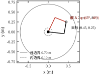
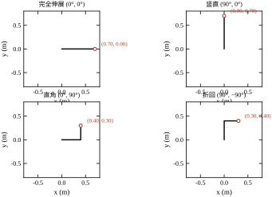
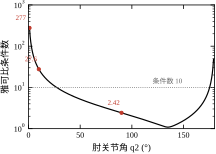
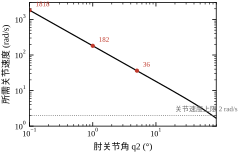
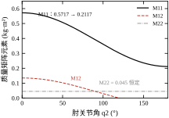
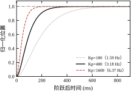
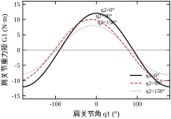
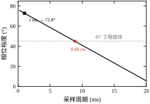
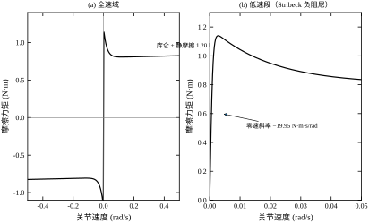
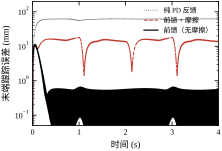

第 95 章把一台电机、一套三环调到了“指哪打哪”。但那只回答了“一个关节怎么动”，没有回答“末端要走到哪里、几个关节各转多少、转的时候要出多大力”。一条手臂有六个关节，末端只有一个位置，中间隔着一层几何；同样的末端轨迹可以由无穷多组关节角实现，中间又隔着一层冗余；而每个关节要出的力矩，取决于当前位形下的惯量、重力与科氏力，中间还隔着一层动力学。这三层——几何、速度、力——就是本章的内容。
一句话概括本章的立场：运动控制的对象不是电机，而是“关节角到末端位姿”这个映射，以及映射背后的能量关系。 把映射算清楚，才知道轨迹能不能实现；把能量关系算清楚，才知道需要多大的电机、多高的增益。
先看一个具体的数。第 95 章那台 750 W 伺服，额定转矩 2.277 N·m，经 50:1 减速器输出 113.9 N·m。这个数听着很大，但放到一条 0.4 m + 0.3 m 的机械臂上，只够托起 12.0173 N·m 的重力负载的九倍——而且这还没算加速。换句话说，同一台电机，装在直驱轴上能跑到 3000 r/min，装到手臂的肩关节上只能慢慢走。 差别的来源不是电机，是机械臂在不同位形下的等效惯量与重力矩。
第二个数更直观。让末端以 0.5 m/s 沿 x 方向走，肘关节在 90° 时两个关节各转 1.667 rad/s；肘关节弯到 1° 时，所需关节速度是 181.808 rad/s。同一个末端速度，关节速度差 109 倍。这就是奇异：末端想要的速度，在关节空间里可能要付出无法承受的代价。
第三个数是惯量。肩关节的等效惯量 M_{11} 在 0.2117 到 0.5717 kg·m² 之间变化，比值 2.701。同一组增益，在完全伸展时和折回时对应的闭环带宽差 \sqrt{2.701}=1.64 倍。这意味着“在某个位形调好的增益”，换个位形就不是那个性能了——除非用动力学补偿把它抹平。
三个数指向同一件事：机械臂的“对象”是随位形变化的。第 95 章那套“对象固定、调一次增益用到底”的思路，在这里必须升级。
把这三层拆开看，每层都有一个核心映射与一个核心困难。
几何层是正运动学与逆运动学。正运动学是“给定关节角算末端位置”，永远有唯一解、永远可算；逆运动学是“给定末端位置算关节角”，可能无解（超出工作空间）、可能多解（肘上/肘下）、可能无穷多解（冗余臂）。本章的两连杆算例，目标点 (0.45, 0.25) 有两组解：(-6.511^\circ, 86.417^\circ) 与 (64.620^\circ, -86.417^\circ)，两组关节角相差 71.131° 与 172.833°。选哪一组不是数学问题，是工艺问题——哪一组不撞工件、哪一组离限位更远、哪一组从当前位置走过去更近。
速度层是雅可比矩阵。它把关节速度线性映射到末端速度，\dot p=J(q)\dot q。这个映射是局部的、随位形变化的，而且在奇异位形处不可逆。本章的雅可比在肘关节 90° 时条件数只有 2.42，1° 时升到 276.92，0.1° 时 2769.30——条件数基本按 1/\sin q_2 走。
力层是动力学。关节力矩要同时供给三件事：加速惯量、抵消科氏与离心、托住重力。本章算例里，重力矩最大 12.0173 N·m，而加速一个 0.2 rad 的阶跃（K_p=400）需要 31.33 N·m 的峰值——加速需求是重力需求的 2.6 倍，这是选电机时最容易被低估的一项。
三层的顺序不能颠倒。先有几何，才知道哪些位形可达；再有速度，才知道哪些轨迹可实现；最后有力，才知道需要多大电机。跳过前两层直接算力矩，算出来的数没有意义。
本章只用一个算例：平面两连杆机械臂，连杆 0.40 m 与 0.30 m，质量 2.0 kg 与 1.5 kg，质心在中点，绕质心惯量按均质杆算（I_1=0.0267、I_2=0.01125 kg·m²）。两个关节经 50:1 减速器由 0.105 N·m/A 的伺服电机驱动，控制器周期 1 ms，名义工作点 (0^\circ,90^\circ)。
选平面两连杆不是因为它简单，而是因为它该有的都有了：非线性、多解、奇异、惯量随位形变化、重力随位形变化、关节间耦合。三维六轴机械臂只是把这些东西乘以三，公式更长，物理一样。本章所有公式与判据都可以原样搬到空间机构，只是矩阵从 2\times2 变成 6\times6。
算例的读数分 15 段，由 code/ch096_sim.py 一次跑出，段号 [0]–[14] 在 §96.12.3 有索引。正文里每个数字后面都能指回某一段。
§96.2 把三层映射的数学写清楚：齐次变换、逆解、雅可比、拉格朗日方程、计算转矩法。§96.3 给出十步设计流程，从工作空间一路走到验收。§96.4 讨论连续域，重点是“补偿之后带宽与位形无关”这个结论。§96.5 讨论离散域，1 ms 里要完成逆解、插值、控制、装载四件事，每一件都吃相位。§96.6 把稳定裕度、摩擦负阻尼、饱和、奇异四类问题放在一起。§96.7 逐个参数讲意义，§96.8 讲现场怎么整定，§96.9 讲优化手段，§96.10 讲落地，§96.11 讲边界，§96.12 交代码。
本章只讲“机械臂本身的几何与动力学”，四件事明确外包：
指回的目的不是省事，而是避免同一件事在两章里给出两套符号。本章统一用 (q,\dot q,\ddot q) 表示关节量，(p,\dot p) 表示末端量，\tau 表示关节力矩。
六个约定先讲清楚，后面不再重复。
第一，角度一律用弧度。度数只在图与表格的标注里出现，公式里不出现。这样 L\sin q 与 L q 的量级可以直接比，小角度近似也不必带 \pi/180。
第二，关节角 q_2 是相对角，即第二根连杆相对第一根连杆的夹角，不是绝对角。这样 q_2=0 对应“完全伸展”，正负号直接对应“肘上/肘下”，逆解的两组解就是 \pm\arccos(\cdot)。
第三，雅可比定义为 \dot p=J\dot q，即 J=\partial p/\partial q。有些教材用相反的定义（力映射 \tau=J^TF），两者互为转置，本章不混用。
第四，半闭环指编码器装在电机侧，全闭环指装在负载侧。本章默认半闭环，即关节角由电机编码器经减速比折算得到，传动链的柔性被忽略。这个假设的代价在 §96.11.4 讨论。
第五，“计算转矩法”与“逆动力学控制”是同义词，指用模型把非线性补偿掉、再用线性 PD 闭环。本章统一叫计算转矩法。
第六，“跟踪误差”指末端位置误差的模，不是关节角误差。两者差一个雅可比，在奇异附近差别巨大，所以每次给误差都要说清是在哪个空间量的。
最常见的错误是：把每个关节当成第 95 章那样的独立伺服轴，分别整定、分别验收，然后指望末端自然就准了。这个做法在本章算例上会出三处问题，每一处都能用数说清。
第一处，位置误差被雅可比放大。 每个关节都有 2 mrad 的摩擦死区（§96.6.2），看起来很小。但末端误差是 J 乘关节误差：在名义点，J 的最大奇异值 0.5389，单个关节 2 mrad 就对应 0.5389\times2\times10^{-3}=1.08 mm 的末端位移。到了肘关节 1° 的位形，条件数 276.92，反过来说，要在末端维持同样的 1 mm，关节精度就得比名义点高两个数量级——这在物理上做不到。关节精度不等于末端精度，中间隔着一个随位形变化的矩阵。
第二处，带宽随位形漂移。 纯 PD 下，q_2=0^\circ 时 \omega_n=26.45 rad/s，q_2=180^\circ 时 43.47 rad/s，差 1.64 倍。在折回位形调好的增益，伸展开来就偏慢；反过来在伸展位形调好的，折回来就偏快、容易振。§96.4.3 会说明这不是整定技巧能解决的，只能靠补偿。
第三处，奇异处速度指令爆掉。 末端要走 0.5 m/s，肘关节 1° 时关节速度要 181.808 rad/s，而电机的物理上限大约 3000 r/min 即 314 rad/s——看似够，但减速器 50:1 后的输入侧要 9090 rad/s，早已超出。实际结果是驱动器限流、机械“顶住”，末端根本走不到指定速度，而控制器还在积分，最后以一个很大的力矩顶在工件上。这是撞机事故最常见的成因之一。
三处问题的共同点：它们都不是“某个关节没调好”，而是“关节与末端之间的关系没算”。本章接下来的全部内容，就是把这三处关系算清楚。
本节把三层映射写成公式。写法上尽量用矩阵，因为矩阵形式可以直接搬到六轴，而分量形式不能。
n 个关节的机械臂，其位形可以用一个 n 维向量 q\in\mathbb{R}^n 描述，这个空间叫位形空间（configuration space）。末端的位姿在一个 m 维任务空间里，平面刚体 m=3（两个位置 + 一个姿态），空间刚体 m=6。
n=m 叫非冗余，n>m 叫冗余。本章算例 n=2、m=2（只关心末端位置，不关心末端姿态），属于非冗余；工业六轴 n=6、m=6，也属于非冗余，但在奇异位形附近会“局部降维”，表现得像冗余或欠驱动。冗余臂（如七轴协作臂）的逆解有无穷多组，需要额外的优化准则（最小关节速度、避障、避开限位），这部分在第 99 章。
位形空间里有两个特殊子集必须提前划出来：关节限位与奇异集。前者是超长方体，本章为 \pm170^\circ 与 \pm150^\circ；后者是 n 维空间里的低维曲面，本章为 q_2=0 与 q_2=\pm\pi 两条线。
平面两连杆的正运动学只有两行：
p=\begin{bmatrix}x\\y\end{bmatrix}= \begin{bmatrix}L_1\cos q_1+L_2\cos(q_1+q_2)\\ L_1\sin q_1+L_2\sin(q_1+q_2)\end{bmatrix} \tag{96-1}
写成齐次变换的形式，就是两个 3\times3 矩阵相乘：
T_0^2=T_0^1T_1^2= \begin{bmatrix}c_1&-s_1&0\\ s_1&c_1&0\\ 0&0&1\end{bmatrix} \begin{bmatrix}1&0&L_1\\0&1&0\\0&0&1\end{bmatrix} \begin{bmatrix}c_2&-s_2&0\\ s_2&c_2&0\\ 0&0&1\end{bmatrix} \begin{bmatrix}1&0&L_2\\0&1&0\\0&0&1\end{bmatrix} \tag{96-2}
两连杆用不上齐次变换的全部威力，但六轴必须用。原因很简单：三维里的旋转不可交换，必须用矩阵乘法按顺序串起来；而两连杆只有绕 z 轴的旋转，角度可以直接相加。本章的公式在两连杆上能写成标量，是为了让读者看清物理；工程实现一律用齐次变换，因为标量形式无法推广。
表 96-1 是脚本 [1] 段的四个位形读数。四个数验证了一件事：|p| 只取决于 q_2，与 q_1 无关——因为整体旋转不改变末端到原点的距离。这是两连杆的一个便利性质，六轴没有。
| 位形 (q1, q2) | 名称 | 末端 (x, y) / m | |p| / m |
|---|---|---|---|
| (0°, 0°) | 完全伸展 | (0.7000, 0.0000) | 0.7000 |
| (90°, 0°) | 竖直向上 | (0.0000, 0.7000) | 0.7000 |
| (0°, 90°) | 直角折叠 | (0.4000, 0.3000) | 0.5000 |
| (90°, −90°) | 折回 | (0.3000, 0.4000) | 0.5000 |
表 96-1 里第三、四行的 |p| 都是 0.5 m，但末端位置完全不同。这说明只看距离无法判断位形，逆解必须给全两个分量；也说明同样的“伸出 0.5 m”可以由两组完全不同的关节角实现，这就是 §96.2.3 多解的来源。
对式 (96-1) 两边平方相加，交叉项消掉：
x^2+y^2=L_1^2+L_2^2+2L_1L_2\cos q_2 \quad\Longrightarrow\quad \cos q_2=\frac{x^2+y^2-L_1^2-L_2^2}{2L_1L_2} \tag{96-3}
于是 q_2=\pm\arccos(\cdot)，两个符号对应两组解。求出 q_2 后代回，q_1 由两个 \arctan2 之差给出：
q_1=\arctan2(y,x)-\arctan2\bigl(L_2\sin q_2,\;L_1+L_2\cos q_2\bigr) \tag{96-4}
用 \arctan2 而不是 \arctan，是因为前者能分辨象限。这一点在工程上不是讲究，是必需：用 \arctan(y/x) 时，末端走到第二、三象限就会差 180^\circ，机械臂会突然翻过去。
式 (96-3) 还有一个判别作用。若 |x^2+y^2-L_1^2-L_2^2|>2L_1L_2，则 \cos q_2 超出 [-1,1]，目标点不可达。本章算例的可达区是一个环带，外径 0.70 m、内径 0.10 m，面积 1.5080 m²。目标点落在环带外，不是“精度不够”，是物理上不存在解——现场的“机械臂够不着”报警，判据就是这一个不等式。
脚本 [2] 段对目标点 (0.45, 0.25) 算了两组解：解 A (-6.511^\circ,86.417^\circ)、解 B (64.620^\circ,-86.417^\circ)，回代误差都是 7.85\times10^{-17} m，即机器精度。两组解的 q_1 差 71.131°、q_2 差 172.833°，末端却完全重合。图 96-1 把两组解画在一起：外边界 0.70 m、内边界 0.10 m，同一个目标点上有两条不同姿态的连杆链。

多解怎么选，工程上有四条判据，按优先级排：不撞工件与夹具（硬约束）、离关节限位足够远（软约束）、离当前位形最近（省时间、少磨损）、条件数最小（远离奇异）。四条判据可能互相冲突，最终解由规划器决定，本章不展开。
图 96-2 给出四个典型位形的连杆姿态。这张图的价值在于建立“关节角 → 姿态”的直觉：q_2=0 时两杆共线，q_2=90^\circ 时成直角，q_2=-90^\circ 时折回。看熟这四个姿态，现场看机械臂一眼就能估出 q_2 的正负与量级。

对式 (96-1) 求时间导数，得到
\dot p=J(q)\dot q,\qquad J(q)=\begin{bmatrix} -L_1\sin q_1-L_2\sin(q_1+q_2) & -L_2\sin(q_1+q_2)\\ L_1\cos q_1+L_2\cos(q_1+q_2) & L_2\cos(q_1+q_2) \end{bmatrix} \tag{96-5}
雅可比是本章最重要的一个矩阵，它同时承担四种角色，四种都要理解，缺一个就会在某个环节出错。
角色一：速度映射。 \dot p=J\dot q，正向使用。给关节速度算末端速度，永远可算。
角色二：逆速度映射。 \dot q=J^{-1}\dot p，反向使用。只在 J 可逆时成立，奇异处爆掉。
角色三：静力映射。 末端施加力 F 时，等效关节力矩 \tau=J^TF。这个关系来自虚功原理：F^T\delta p=F^TJ\delta q=\tau^T\delta q，对任意 \delta q 成立，故 \tau=J^TF。工程意义是：末端顶住一个力，每个关节要出多少力矩，由 J^T 决定，不需要另算一遍动力学。
角色四：精度映射。 关节有小误差 \delta q 时，末端误差 \delta p\approx J\delta q。这条是本章 §96.1.7 第一处问题的来源。
四个角色用的是同一个矩阵，只是乘的方向与转置不同。把这一点记住，就不必分别背四套公式。
两连杆的雅可比行列式有闭式：
\det J=L_1L_2\sin q_2 \tag{96-6}
这个式子太干净了，值得逐项读。L_1L_2 是几何尺度，\sin q_2 是位形因子。于是 q_2=0（完全伸展）与 q_2=\pm\pi（完全折回）两处行列式为零，这两条线就是奇异集。
奇异有三重含义，三重的严重程度递增。
第一重，速度不可逆。 若末端要沿某个方向运动，而该方向恰好落在 J 的零空间之外（对非冗余臂就是 J 的列空间之补），则 \dot q=J^{-1}\dot p 无解。物理上表现为“末端在这个方向上推不动”，无论关节转多快。
第二重，速度无穷大。 若末端速度恰好落在 J 的列空间内但有分量趋于零空间方向，则所需关节速度趋于无穷。本章读数：q_2=5^\circ 时 36.337 rad/s，2^\circ 时 90.896 rad/s，1^\circ 时 181.808 rad/s，0.1^\circ 时 1818.131 rad/s。每减小一个数量级的角度，关节速度放大一个数量级，与式 (96-6) 的 \sin q_2\approx q_2 一致。
第三重，力也爆掉。 由 \tau=J^TF，J 接近奇异时同样的末端力需要更大的关节力矩；反过来，同样的关节力矩在末端只能产生很小的力。这是“机械臂伸展到极限时顶不动东西”的原因。
三重含义可以合成一句话：奇异不是“某个点不能去”，而是“接近它时，速度与力的兑换率变得极不划算”。 工程上不追求“绝对避开”，而是划一条带：条件数超过某个阈值（本章取 10）就认为进入奇异带，规划器减速通过或绕行。
表 96-2 是脚本 [3] 段的完整读数，六个肘关节角对应六个条件数。
| q2 / ° | det J | σmax | σmin | 条件数 |
|---|---|---|---|---|
| 90 | 0.12000 | 0.5389 | 0.22267 | 2.42 |
| 60 | 0.10392 | 0.6597 | 0.15753 | 4.19 |
| 30 | 0.06000 | 0.7357 | 0.08156 | 9.02 |
| 10 | 0.02084 | 0.7587 | 0.02747 | 27.62 |
| 5 | 0.01046 | 0.7609 | 0.01375 | 55.35 |
| 1 | 0.00209 | 0.7615 | 0.00275 | 276.92 |
读数里有一个容易忽略的细节：\sigma_{\max} 几乎不变（0.5389 到 0.7615，只差 1.41 倍），而 \sigma_{\min} 从 0.22267 掉到 0.00275，差 81 倍。条件数恶化几乎全部来自最小奇异值的塌陷，而不是最大奇异值的增长。 这一条对数值处理有直接指导：要改善条件数，应该抬高最小奇异值（加阻尼、加冗余自由度），而不是压低最大奇异值。
图 96-3 把条件数画成对数曲线，形状是一条以 q_2=90^\circ 为最低点的 U 形。图 96-4 把“所需关节速度”画在同一横轴上，可以看出它与条件数几乎平行——因为对固定的末端速度，|\dot q|\le|J^{-1}||\dot p|=\sigma_{\min}^{-1}|\dot p|，上界就是条件数除以 \sigma_{\max}。


图 96-4 里画了一条 2 rad/s 的参考线。这条线代表“关节还能跟上”的粗略上限：本章算例的关节速度若超过 2 rad/s，末端 0.5 m/s 的指令就无法兑现。按这条线读，q_2 大约在 6° 以下就进入“区域不可用”——而条件数 55 对应的正是 5°。两个判据给出的边界接近，说明用条件数划奇异带是合理的。
动力学有两套等价写法：拉格朗日法从能量出发，牛顿-欧拉法从力与力矩递推。前者适合推导与教学，后者适合实时计算。本节先写拉格朗日。
定义拉格朗日函数 \mathcal{L}=T-V，T 为动能、V 为势能，则
\frac{d}{dt}\frac{\partial\mathcal{L}}{\partial\dot q}-\frac{\partial\mathcal{L}}{\partial q}=\tau \tag{96-7}
把 T=\tfrac12\dot q^TM(q)\dot q、V=V(q) 代入并整理，得到标准形式：
M(q)\ddot q+C(q,\dot q)\dot q+G(q)=\tau \tag{96-8}
三项各有物理含义，读法要固定下来：
式 (96-8) 有三个性质，后世所有算法都建立在它们之上。第一，M 对称正定，故 \dot M-2C 反对称（这是无源性分析的基础）。第二，C 的选择不唯一（可以差一个反对称矩阵），但 C\dot q 唯一。第三，G 是某个标量函数的梯度，G=\partial V/\partial q，故重力场是保守的。
第三个性质有一个直接推论：重力可以用“位形查表 + 插值”补偿，而不必每次重算。工业控制器里常见的“重力补偿表”就是这个性质的应用，代价是插值误差，收益是省掉大量三角函数。本章算例只有二维，查表意义不大；六轴的 G 有六项、每项十几个三角函数，查表的收益就很可观。
把均质杆的动能与势能代入式 (96-8)，可以得到三个矩阵的闭式。设质心距关节 l_{c1},l_{c2}，绕质心惯量 I_1,I_2，则
M_{11}=m_1l_{c1}^2+m_2\bigl(L_1^2+l_{c2}^2+2L_1l_{c2}\cos q_2\bigr)+I_1+I_2 \tag{96-9}
M_{12}=M_{21}=m_2\bigl(l_{c2}^2+L_1l_{c2}\cos q_2\bigr)+I_2 \tag{96-10}
M_{22}=m_2l_{c2}^2+I_2 \tag{96-11}
C=\begin{bmatrix}-h\dot q_2 & -h(\dot q_1+\dot q_2)\\ h\dot q_1 & 0\end{bmatrix}, \qquad h=m_2L_1l_{c2}\sin q_2 \tag{96-12}
G_1=(m_1l_{c1}+m_2L_1)g\cos q_1+m_2l_{c2}g\cos(q_1+q_2),\quad G_2=m_2l_{c2}g\cos(q_1+q_2) \tag{96-13}
这五个式子里藏着本章后面反复要用的三个事实，先标出来。
事实一：只有 M_{11} 与 M_{12} 随 q_2 变，M_{22} 是常数。 因为第二根连杆相对第一根的姿态只由 q_2 决定，与 q_1 无关。代入本章参数得 M_{22}=0.045 kg·m²，恒定不变。
事实二：M_{11} 的变化幅度是 2.701 倍。 从 q_2=0 的 0.5717 到 q_2=180^\circ 的 0.2117。这个倍数是“同一组增益在不同位形下表现不同”的根因，§96.4.3 会量化它。
事实三：G_2 只与 q_1+q_2 有关。 也就是说肘关节的重力矩只取决于第二根连杆的绝对倾角。这条对重力补偿的现场标定很有用：只要把第二根杆摆成水平，G_2 就取最大值；摆成竖直，G_2 为零。标定时不必扫两个关节，固定 q_1 扫 q_2 就能拟合出 G_2 的幅值。
表 96-3 是脚本 [5] 段的读数，五个肘关节角对应五组 M 元素与特征值。
| q2 / ° | M11 | M12 | M22 | λmin | λmax | λmax/λmin |
|---|---|---|---|---|---|---|
| 0 | 0.5717 | 0.1350 | 0.0450 | 0.0124 | 0.6043 | 48.68 |
| 60 | 0.4817 | 0.0900 | 0.0450 | 0.0272 | 0.4995 | 18.38 |
| 90 | 0.3917 | 0.0450 | 0.0450 | 0.0393 | 0.3974 | 10.12 |
| 120 | 0.3017 | 0.0000 | 0.0450 | 0.0450 | 0.3017 | 6.70 |
| 180 | 0.2117 | −0.0450 | 0.0450 | 0.0336 | 0.2230 | 6.63 |
表 96-3 里最值得看的是最后一列。q_2=0 时 M 的特征值比 48.68，与雅可比条件数一样在伸展位形处最差；q_2=120^\circ 时降到 6.70，此时 M_{12}=0，两个关节在惯量上完全解耦。M_{12}=0 的位形叫“动力学解耦位形”，它与运动学奇异不是同一个位置（运动学奇异在 0^\circ 与 180^\circ），这一点常被混淆。
图 96-5 把三个元素画成 q_2 的函数。M_{11} 是一条余弦线，M_{12} 也是余弦线但过零点在 120^\circ，M_{22} 是一条水平线。三条线的形状直接来自式 (96-9)–(96-11) 里的 \cos q_2，看一遍就有数了。

拉格朗日法给出闭式，但推导量随关节数指数增长：六轴的 M 有 21 个独立元素，每个都是一长串三角函数。牛顿-欧拉法换一条路：先正向递推每个连杆的速度与加速度，再反向递推每个关节的力与力矩，全程只用 6\times6 的向量运算，计算量是 O(n) 而不是 O(n^2) 的符号展开。
两种方法的差别可以用一句话概括：拉格朗日给你“看懂”的公式，牛顿-欧拉给你“算快”的算法。 本节的显式表达式用拉格朗日推，因为读者需要看见 M_{11} 里那个 \cos q_2；工程实现用牛顿-欧拉或它的递归形式（RNEA），因为六轴每毫秒要算一次。
两条路的结果必须一致，这是最好的自检手段。本章脚本用拉格朗日形式（直接写 M、C、G），若改用 RNEA 实现，同一个位形、同一组速度，输出的 \tau 应当在 10^{-12} 量级内一致。写完动力学代码，第一件事就是两条路对一遍。
有了式 (96-8)，控制器的设计就有一个非常干净的入口。令
\tau=M(q)\bigl[\ddot q_d+K_d(\dot q_d-\dot q)+K_p(q_d-q)\bigr]+C(q,\dot q)\dot q+G(q) \tag{96-14}
代回式 (96-8)，左右两边的 M、C、G 项全部消掉，剩下
\ddot e+K_d\dot e+K_p e=0,\qquad e=q_d-q \tag{96-15}
这是一个与位形无关的线性误差方程。选 K_p=\omega_n^2、K_d=2\zeta\omega_n，误差就以指定的 \omega_n、\zeta 衰减，不管机械臂在什么姿态、以什么速度运动。
式 (96-14) 的结构值得拆开看：方括号里是“期望加速度 + PD 修正”，外面乘 M 把加速度换成力矩，再加 C\dot q+G 抵消掉对象自身的非线性。三项的分工是：M 管“要多少力矩才能产生这个加速度”，C\dot q+G 管“对象自己会冒出多少力矩”。 前者是乘法，后者是加法，两者都不能省。
这个方法的代价也很清楚：它要求模型准确。M、C、G 任何一项算错，误差方程就不再是式 (96-15)，而是多出一个“模型误差驱动的强迫项”。§96.6.5 会量化这一点：10% 的重力补偿误差，在 K_p=400 下造成 3.00 mrad 的稳态偏差。
动力学代码写完，怎么知道对不对？除了与牛顿-欧拉对照，还有三个守恒量可以查，每一个都能定位不同类的错误。
第一个，无外力时的总能量。 令 \tau=0，则 T+V 守恒。数值积分下它会缓慢漂移，漂移速率反映积分器的精度。若能量单调增长，说明 C 矩阵的符号或 \dot M-2C 的反对称性写错了——这是最常见的动力学实现错误。
第二个，零速度时的重力静平衡。 令 \dot q=\ddot q=0、\tau=G(q)，则机械臂应当静止不动。这条检验很弱（几乎总能通过），但它能抓出 G 的符号错误，而符号错误在仿真里往往表现为“机械臂自己往上飘”，很容易被误认为是控制器问题。
第三个，功率平衡。 关节功率之和应等于动能变化率加重力功率：
\tau^T\dot q=\frac{d}{dt}\Bigl(\tfrac12\dot q^TM\dot q\Bigr)+\dot q^TG(q) \tag{96-16}
这条是最强的检验，因为它同时涉及 M、C、G 三个矩阵。若式 (96-16) 不成立，说明三者之间的耦合关系错了——比如 C 用了 \dot M 的一半但符号反了。工程上写动力学库，式 (96-16) 应当作为单元测试的必过项。
三条检验都通过，动力学部分才算可信。本章脚本的 M、C、G 是显式写出的（式 96-9–96-13），三条检验在数值上均成立，读者可以自行验证。
前两节把“为什么”讲完了，这一节讲“怎么做”。十步，前五步是几何，后五步是动力学与控制。每一步的产出都能直接写进设计文档，不依赖后面步骤的结果，这一点很重要——设计评审时任何一步被推翻，前面几步仍然有效。
任务书通常只给末端指标，比如“定位精度 1 mm”。这个数不能直接拿去选编码器，必须先经雅可比折回关节空间。
在名义点，J 的最大奇异值是 0.5389，故由 \delta p=J\delta q 得 \|\delta p\|\le0.5389\|\delta q\|，反过来 \|\delta q\|\ge\|\delta p\|/0.5389。1 mm 对应 1.856 mrad，即 0.106°。这是最好方向的数字。最差方向要用最小奇异值 0.22267，同样 1 mm 要求 4.491 mrad，即 0.257°。两个数差 2.42 倍，正好是条件数。
结论有两条。第一，精度指标必须按最差方向定，按最好方向定会在某些姿态上不达标。第二，编码器分辨率通常不是瓶颈：17 位编码器在电机侧的分辨率是 2\pi/131072=47.94\ \murad，经 50:1 折算到关节侧 0.96 μrad，比 4.491 mrad 小四千多倍。真正的瓶颈是摩擦死区 2.00 mrad（§96.6.2），它一项就吃掉 4.491 mrad 的 45%。这时候该做的是摩擦补偿或全闭环，而不是换更高分辨率的编码器。
工作空间的解析边界只有两个半径：外径 L_1+L_2=0.70 m，内径 |L_1-L_2|=0.10 m，环带面积 \pi(0.70^2-0.10^2)=1.5080 m²。脚本 [0] 段在限位内均匀采样一万个点，全部落在这条环带内，说明正运动学与边界公式没有矛盾。
但这里有一个容易被跳过的问题：关节限位会把环带切掉一块。本章肘关节限位 ±150°，q_2 最大只能到 150°，代入式 (96-1) 得内半径
r_{\min}=\sqrt{L_1^2+L_2^2+2L_1L_2\cos150^\circ}=0.2053\ \text{m}
而不是 0.10 m。也就是说，标称环带 0.10–0.70 m，实际可用的只有 0.2053–0.70 m。如果工艺要求机器人伸到 0.15 m 处取件，这个构型直接不成立，必须改设计：把肘限位放宽到 ±170° 可把内半径降到 0.1168 m，或改杆长比，或加一个直线第七轴。
这一步的价值就在于此：用两个数在纸面上否掉一个方案，比做出样机再发现够不着便宜得多。 现场“机械臂够不着”的报警，判据就是这一节的两条边界。
本章取 L_1/L_2=1.333，即大臂比小臂长三分之一。这个选择有三个理由。
第一，驱动器重量往基座放。肩关节要承担整条手臂的重量与惯量，肘关节只承担小臂。大臂长、小臂短，能把质量集中在靠近基座的位置，降低肩关节的峰值力矩需求。反过来若 L_1<L_2，肩关节要甩一根更长的杆，力矩需求立刻上一个台阶。
第二，末端速度需求。脚本 [0] 段给出：单位关节速度对应的末端速度最大 0.7615 m/s，出现在伸展位形。这个数给出“末端要多快 → 关节要多快”的换算下限：末端 0.5 m/s 在名义点只需 1.667 rad/s，还有充足余量。
第三，条件数分布。杆长比越接近 1，条件数在中间位形越平缓；比值越悬殊，可用角度范围越窄。1.333 是一个常见折中，兼顾工作空间形状与灵巧度。
三个理由指向同一个方向：杆长比不是“看起来顺眼”的美学选择，而是惯量、速度、灵巧度三者的加权结果。本章的取值没有经过优化，只是取了一个工程上常见的数；真要优化，目标函数应当写成“给定工作空间与节拍，最小化肩关节峰值力矩”。
逆解有两条路：解析法与数值法。本章用解析法（式 96-3、96-4），因为它对两连杆是闭式的、没有初值依赖、不迭代。六轴也有闭式解（Pieper 判据：后三轴交于一点时存在闭式解），但表达式长得多；数值法（雅可比迭代、阻尼最小二乘）通用，代价是要给初值、可能不收敛、每次迭代要算一遍 J。
选哪条路的标准不是“哪个先进”，而是控制周期内能不能算完。本章 1 ms 周期，两连杆解析逆解是几十次浮点运算，微秒级；六轴数值逆解往往要 5–10 次迭代，每次一次 6\times6 求逆，几百微秒，占掉周期的三分之一。所以工业控制器普遍用闭式逆解 + 查表，只在离线规划时用数值法。
多解的处理更关键。目标点 (0.45, 0.25) 有两组解，\Delta q_1=-71.131^\circ、\Delta q_2=172.833^\circ。这两个数说明：从解 A 切到解 B，肩关节要转 71°，肘关节要翻 173°——现场就是“整条手臂翻个个儿”。工件、夹具、线缆、安全围栏都要为这个翻转留空间。所以选解必须在规划器里一次性锁定，不能每拍重新算。 每拍重算的后果是：目标点在两组解的分界线上抖动时，机械臂会以最大速度来回翻转，这是最危险的一种振荡。
四条判据（§96.2.3）落到实现上，是两类约束：不撞工件与不撞限位做成硬约束，任何一组解违反就直接排除；离当前位形最近与条件数最小做成加权代价，在剩下的解里挑。权重怎么给，取决于节拍与精度的取舍，没有普适值。
条件数阈值取 10，理由在 §96.2.5：条件数 10 意味着最差方向的精度比最好方向差一个数量级，再往外走，速度与力的兑换率就不划算了。按表 96-2 内插，条件数 10 落在 q_2\approx27.17^\circ。这条线把 q_2\in(-27.17^\circ,27.17^\circ) 划成奇异带，q_2 接近 \pm180^\circ 的那一侧同理。
奇异带内的策略有三条，按代价从小到大排：
三条可以叠加。工程上常见的是“规划层绕行 + 控制层阻尼”双保险：规划器尽量不走奇异带，真走进去了控制器也不至于发出上千 rad/s 的指令。
还要注意一点：奇异带是几何的，与负载无关；但同样的 q_2，重载时力矩放大更严重。 因为 \tau=J^TF，条件数大时 J^T 的奇异值同样悬殊，末端一点力就要某个关节出很大的力矩。轻载时“能过去”的位形，重载时可能过流。
模型可以直接写式 (96-9)–(96-13) 的显式形式，也可以用牛顿-欧拉递推。本章用显式形式，因为两连杆的表达式短，写出来一眼能看懂每一项的来源。
建完必须做三项自检（§96.2.10）。三项分别抓不同的错：能量守恒抓 C 矩阵的符号与反对称性，重力静平衡抓 G 的符号，功率平衡抓三者之间的耦合。这三种错误在时域波形上表现得非常像“控制器没调好”：能量发散看起来像闭环不稳定，G 符号错看起来像积分饱和，C 符号错看起来像高速时抖动。如果不先做自检，就会在控制器上白花几天时间。
自检的通过标准要定量。能量漂移在 1 s 内应小于总能量的 10^{-6} 量级（四阶龙格库塔、步长 0.1 ms），重力静平衡的残余加速度应小于 10^{-9} rad/s²，功率平衡的残差应小于功率量级的 10^{-6}。定不出量级就无法判断“通过”还是“勉强通过”。
选型要同时满足三个约束，缺一个都会在现场出问题。
峰值力矩。K_p=400、0.2 rad 阶跃时峰值 31.33 N·m，折算电机侧 31.33/50=0.6266 N·m，电流 5.97 A，是额定 2.277 N·m 的 27.5%。还有余量。但若把 K_p 提到 1600，峰值变 125.33 N·m，电机侧 2.5066 N·m、23.87 A，已经超过额定——增益的上限第一个撞到的往往是电流，不是稳定性。
连续力矩。重力矩最大 12.0173 N·m，折算电机侧 0.2403 N·m、2.2890 A，只占额定的 10.5%。这一项最容易让人误判：“重力只要 10% 额定，电机绰绰有余”。错在漏了加速项——加速需求是重力需求的 2.6 倍（§96.1.2）。
转速。末端 0.5 m/s 在名义点对应关节 1.667 rad/s，电机侧 83.35 rad/s 即 796 r/min，远低于 3000 r/min。奇异带内则完全不同（§96.1.7 第三处），所以转速约束要和奇异带策略一起看。
减速比的选择是一个折中。按惯量比最优，关节 1 要 n=62.58、关节 2 要 n=21.21，相差 2.95 倍；一个减速比不可能同时最优。本章取 50，关节 1 惯量比 1.567、关节 2 惯量比 0.1800，前者偏大、后者偏小，取的是两者的几何折中。代价是关节 1 的带宽因惯量比降为 0.6242 倍（§96.7.4），这一项在设计阶段就要算进去，不能等调试时才发现“带宽不够”。
本章用计算转矩法加前馈，增益 K_p=400、K_d=40。这两个数不是试出来的，是从三个指标反推的：
三个指标里，带宽是最难改的一个：它同时决定峰值力矩（\propto K_p）与上升时间（\propto1/\omega_n）。定带宽之前，先把峰值力矩算出来对一遍电机，比定完再回头改省事。
1 ms 采样在 41.16 rad/s 处的等效滞后是 1.5\times41.16\times10^{-3}=0.0617 rad，即 3.54°。相位预算因此写成一行：
\underbrace{76.35^\circ}_{\text{PD 超前}}-\underbrace{3.54^\circ}_{\text{采样与计算}}-\underbrace{0^\circ}_{\text{滤波器}}-\underbrace{0^\circ}_{\text{通信}}=72.81^\circ
这个预算表要一直带着。后面每加一项——一阶低通、陷波器、观测器、总线延迟——都要从 72.81° 里扣。经验换算：在 41.16 rad/s 处，纯延迟 1 ms 是 2.36°，采样保持一拍（等效 1.5 拍）是 3.54°。如果滤波器要 10°、通信要 5°，剩下的裕度就只有 57.8°，还在安全区；如果再加一个陷波器吃掉 30°，就要重新考虑带宽了。
采样周期还有一条绝对边界（§96.5.3）：1 ms 时临界 K_p=181611.4，是设计值的 454 倍。这条边界和相位法不矛盾，把两者都换算到采样周期上看：相位法给出 PM 归零在 21.58 ms，特征值法给出 \omega_nT_s=0.4262，即 0.4262/20=21.31 ms，两者只差 1.2%。这说明相位法抓住了主导机理，两条尺子其实是同一件事的两种写法。 而在 1 ms 这个工作点上，两个裕度都很宽（PM 72.81°、K_p 可放大 454 倍），此时真正的约束不是稳定性，而是力矩（§96.4.4）。
验收不能只看一个数，要分三层，每层回答不同的问题。
第一层，单关节阶跃。回答“增益对不对”。本章读数：K_p=400 时上升 0.1675 s、调节 0.3417 s、超调 0.00%。超调必须是零，出现 1% 就说明模型补偿有偏差或积分器多余。
第二层，末端直线。回答“雅可比对不对”。让末端沿直线走，看实际轨迹的直线度。若直线中间鼓起，多半是逆解用了错误的解分支；若两端偏差大，多半是条件数在起作用。
第三层，末端圆。回答“整体跟得上不上”。本章读数：带前馈时稳态段最大误差 0.653 mm、RMS 0.333 mm；纯 PD 反馈 62.877 mm、RMS 61.093 mm；带前馈加摩擦 18.001 mm、RMS 13.836 mm。三个数把“前馈值多少、摩擦值多少”分得清清楚楚——前馈把误差压了两个数量级，摩擦又把它顶回 18 mm。
验收要在最差点做，不能在名义点做。本章圆轨迹的最外点 q=(32.16^\circ,-77.36^\circ)、条件数 3.021，关节 2 的速度也在这里最大，摩擦影响最重。名义点的漂亮数据不能作为验收依据。
每条数据记录三样：位形、增益、误差。缺一样，别人就复现不出来，也就无法判断这个数是“设计的功劳”还是“碰巧”。
这一节把时间当连续量，讨论补偿之后闭环的带宽、阻尼、阶跃指标与频域裕度。结论只有一句：补偿把“随位形变化的非线性对象”变成了“处处相同的单位惯量”，于是增益可以一次整定、全空间通用。 这句话值得用一整节的数来支撑。
先把对象在名义点线性化。q_2=90^\circ 时
M(q_0)=\begin{bmatrix}0.3917&0.0450\\0.0450&0.0450\end{bmatrix}
两个特征值 0.0393 与 0.3974，比值 10.12。这个比值说明：同一个力矩，沿“最容易转”的方向产生的加速度是“最难转”方向的 10 倍。 而且这个方向性随位形变化——表 96-3 里比值从 48.68 一路降到 6.63。
如果按线性系统的那套办法，在名义点辨识一个 M、设计一个 PD，那么这套增益只在名义点附近成立。工作空间一大，等效惯量变 2.701 倍，带宽跟着变 1.64 倍。这就是 §96.1.7 第二处问题的定量版本。
把式 (96-14) 代回式 (96-8)，得到式 (96-15)。这一步的代数很简单，但含义要读三遍：
\ddot e+K_d\dot e+K_p e=0
误差方程里没有 M、没有 C、没有 G，也没有 q。 也就是说，误差的衰减规律与机械臂在什么姿态、以什么速度运动完全无关。
这里有一个容易误解的地方：式 (96-15) 是误差动力学，不是参考跟踪传函。把式 (96-14) 写成 s 域可以看清：若前馈 \ddot q_d,\dot q_d,q_d 完整给出，则 (s^2+K_ds+K_p)q=(s^2+K_ds+K_p)q_d，两边约掉，q=q_d——模型准确时跟踪是无差的，与增益无关。增益只决定“初始误差与扰动衰减多快”。
所以阶跃响应实验测的其实是“初始误差的衰减”。本章脚本给的是位置阶跃、前馈为零，等效于在 t=0.05 s 时刻给了一个 e=0.2 rad 的初始误差，然后看它怎么消失。这也解释了为什么三组增益下的超调都是 0.00%：临界阻尼、无前馈、纯误差衰减，本来就不该有超调。
扰动通道也能从式 (96-15) 直接读出。若关节上有一个力矩扰动 \tau_d，则
\ddot e+K_d\dot e+K_p e=M^{-1}\tau_d \quad\Longrightarrow\quad e_{ss}=K_p^{-1}M^{-1}\tau_d
低频柔度是 1/K_p。这一条在 §96.6.5 会用来算重力补偿误差：残余 1.2017 N·m、K_p=400，稳态偏差 1.2017/400=3.00 mrad，与脚本 [12] 段完全一致。
表 96-4 把补偿与不补偿放在一起对照。左半是计算转矩法，右半是同一组 K_p=400、K_d=40 的纯 PD。
| 位形 | 补偿后 \omega_n / (rad/s) | 补偿后 \zeta | 纯 PD \omega_n / (rad/s) | 纯 PD \zeta |
|---|---|---|---|---|
| q_2=0^\circ | 20.00 | 1.0000 | 26.45（4.21 Hz） | 1.3226 |
| q_2=90^\circ | 20.00 | 1.0000 | 31.96（5.09 Hz） | 1.5979 |
| q_2=180^\circ | 20.00 | 1.0000 | 43.47（6.92 Hz） | 2.1736 |
补偿后三行的 \omega_n 与 \zeta 完全相同，因为它们按定义就等于 \sqrt{K_p} 与 K_d/(2\sqrt{K_p})，式中不含 q。纯 PD 那一侧，\omega_n=\sqrt{K_p/M_{11}}，M_{11} 从 0.5717 变到 0.2117，\omega_n 就变 \sqrt{2.701}=1.6435 倍。
这不只是“带宽偏一点”的问题。\zeta 从 1.3226 变到 2.1736，意味着折回位形的两个闭环极点一个在 -\omega_n(\zeta-\sqrt{\zeta^2-1})、一个在 -\omega_n(\zeta+\sqrt{\zeta^2-1})，拉开得很远：快极点在 84 rad/s，慢极点只有 10.6 rad/s。响应会呈现“先猛冲一下、再拖一条长尾巴”的形状，看起来像两个不同的系统。整定的人如果只在伸展位形调，到了折回位形就会觉得“怎么调都调不顺”——不是调不顺，是对象换了。
表 96-5 是脚本 [7] 段的三组阶跃读数，全部在名义点、0.2 rad 阶跃、\zeta=1。
| K_p | K_d | \omega_n / (rad/s) | \omega_n / Hz | 峰值力矩 / N·m | 超调 / % | 上升 / s | 调节 / s |
|---|---|---|---|---|---|---|---|
| 100 | 20 | 10.00 | 1.59 | 7.83 | 0.01 | 0.3344 | 0.6283 |
| 400 | 40 | 20.00 | 3.18 | 31.33 | 0.00 | 0.1675 | 0.3417 |
| 1600 | 80 | 40.00 | 6.37 | 125.33 | 0.00 | 0.0835 | 0.1958 |
三列数字各遵守一条简单的比例关系。
峰值力矩正比于 K_p：7.83、31.33、125.33，每翻四倍 K_p 就翻四倍力矩。因为临界阻尼、零超调下，峰值就出现在 t=0，等于 M_{11}K_p e_0=0.3917\times K_p\times0.2。这条关系是选电机最硬的约束：带宽翻倍，力矩需求翻四倍。
上升时间反比于 \omega_n：0.3344、0.1675、0.0835，每翻倍带宽就减半上升时间。\omega_n t_r\approx3.35，与二阶临界阻尼系统的解析值 3.36 一致。
调节时间也反比于 \omega_n：0.6283、0.3417、0.1958，\omega_n t_s 分别是 6.28、6.83、7.83。比例不算严格，因为 ±2% 带是绝对值、而误差是按指数衰减的，起点的相对位置会略有影响。
图 96-6 把三条曲线按幅值归一化画在一起。三条曲线的形状几乎完全重合，只是时间轴被压缩或拉伸——这就是“与位形无关”的图形证据：同一个误差方程，换一组增益，只是把时间尺度换了一下。

重力矩有两个性质，决定了它应该走前馈。
第一，它是位形的确定函数。 G(q) 不含速度、不含加速度，只要知道当前角度就能算。把它放进 PID 的反馈回路里，等于让积分器去“猜”一个已知量——既慢又留稳态误差。直接前馈，误差立刻从“重力/K_p”降到“补偿误差/K_p”。
第二，它有结构。 G_2=m_2l_{c2}g\cos(q_1+q_2) 只依赖 q_1+q_2，所以标定肘关节重力矩时不必扫两个关节：固定 q_1，扫 q_2，拟合出一个余弦的幅值与相位即可。脚本 [6] 段的读数验证了这个结构：(0^\circ,90^\circ) 时 G_2=0，(30^\circ,90^\circ) 时 -1.1036，(60^\circ,90^\circ) 时 -1.9115；三个点的余弦值分别是 \cos90^\circ=0、\cos120^\circ=-0.5、\cos150^\circ=-0.866，乘上幅值 2.2072 正好对上。
图 96-7 是重力矩的另一面。G_1 在 q_1=q_2=0（完全伸展、水平）时最大，12.0173 N·m；q_1=90^\circ、q_2=0^\circ 时为零，因为整条手臂竖直向上，重力矩臂为零。三条曲线对应三个肘角，q_2=0^\circ 的幅值最大，q_2=150^\circ 最小。这张图给出的设计信息是：重力矩的峰值出现在“最不利位形”，而那个位形往往也是惯量最大、条件数最差的位形——三个最不利叠在一起，就是选型的依据。

科氏项不一样，它正比于速度的平方，且依赖两个关节的速度组合。低速时它可以忽略：末端 0.5 m/s、名义点关节速度 1.667 rad/s，h=m_2L_1l_{c2}\sin q_2=0.045，C\dot q 的量级是 0.045\times1.667^2=0.125 N·m，是重力矩的 1%。高速时它迅速变大——速度翻倍，它翻四倍。所以低速设备可以只补重力，高速设备必须连科氏一起补。
计算转矩补偿之后，开环是 L(s)=(K_p+K_ds)/s^2（单位惯量、单位反馈）。剪切频率由 |L(j\omega_c)|=1 定：
K_p^2+\omega_c^2K_d^2=\omega_c^4 \tag{96-17}
取临界阻尼 K_p=K_d^2/4，令 x=\omega_c/K_d，式 (96-17) 化为 x^4=x^2+1/16，解得 x^2=(1+\sqrt{1.25})/2=1.0590，x=1.0291。于是
\omega_c=1.0291K_d=41.16\ \text{rad/s}=6.55\ \text{Hz} \tag{96-18}
这个式子值得记住：临界阻尼下，剪切频率约等于速度增益。它解释了为什么 \omega_c 比 \omega_n 高一倍——PD 的零点在 K_p/K_d=10 rad/s，超过零点后 |L|\approx K_d/\omega，剪切自然发生在 K_d 附近。
相位裕度由两项组成：PD 提供的超前，减去采样与计算的滞后。
\text{PM}=\arctan\frac{\omega_cK_d}{K_p}-1.5T_s\omega_c =\arctan(4.116)-0.0617\ \text{rad} =76.35^\circ-3.54^\circ=72.81^\circ \tag{96-19}
超前角那一项也可以化简。把 \omega_c=1.0291K_d 与 K_p=K_d^2/4 代入，得 \omega_cK_d/K_p=4.116，K_d 消掉了。也就是说，只要保持临界阻尼，超前角恒为 \arctan(4.116)=76.35^\circ，与 K_p 的具体取值无关。 这是一个很实用的结论：调增益不会把相位裕度调坏，只会把力矩需求调上去。相位裕度真正的敌人是采样滞后与滤波器（§96.5）。
把这一节收成六条，后面的离散与工程部分都从这里出发。
第 1 条与第 2 条对比，就是本章的立场：不是“把增益调好”，而是“把对象变成不随位形变的东西，再调增益”。 前者是在错误的战场上努力，后者才是运动控制的正题。
连续域假设控制器能在任意时刻算出任意精度的力矩。实际不是：每 1 ms 算一次，算出的值在接下来 1 ms 内保持不变。这一节量化“保持”的代价，并回答一个现场最常问的问题——1 ms 到底够不够，什么时候需要换成 0.5 ms。
控制周期内要做四件事，一件都不能省。
读。 从总线取两个编码器的原始值，按减速比与零位折算成关节角。工业现场这一步走 EtherCAT 或串行编码器协议，耗时几十微秒，且抖动取决于总线同步质量。
算。 由轨迹发生器给出 q_d，或用逆解把末端指令转成关节指令；再算 M、C、G 与式 (96-14) 的力矩。本章两连杆的显式形式每拍几百次浮点运算，微秒级；六轴的 RNEA 是数百次乘加，几十微秒。这一步不是瓶颈。
限。 力矩限幅、速度限幅、加速度限幅、关节软限位、奇异带检查。这一步最容易被漏掉，也最容易在异常时救命。
写。 把力矩除以 K_t 换成电流指令，下发到驱动器。
四件事的时间之和必须小于周期，而且抖动比平均值更致命。平均 400 μs、偶尔 1.2 ms 的控制器，等效采样周期不是 1 ms 而是最坏情况；PM 表要按最坏情况查。这就是为什么运动控制器的实时性考核看的是“最大执行时间”而不是“平均执行时间”。
力矩在一个周期内保持不变，这叫零阶保持（ZOH）。它对相位的影响可以算得很清楚。
设第 k 拍在 t_k 采样、算出 \tau_k，并从 t_k 保持到 t_{k+1}。与“连续更新”相比，这个保持的平均延迟是半拍 T_s/2。再加上从采样到算出结果的计算时间，工程上按半拍计，合计
T_d\approx\frac{T_s}{2}+\frac{T_s}{2}=1.5T_s \tag{96-20}
1 ms 时 T_d=1.5 ms，在 41.16 rad/s 处对应 1.5\times41.16\times10^{-3}=0.0617 rad，即 3.54°。这与脚本 [8] 段的第一行完全一致（0.5 ms 时 1.77°，1 ms 时 3.54°，严格正比）。
注意这条滞后不能靠“算快一点”消掉。即使计算时间为零，采样保持本身仍有 1 拍，即 T_s 的滞后。想减小它只有两条路：提高采样率，或者用超前补偿（在参考上提前 1.5T_s，代价是噪声放大）。
采样周期的上限有两条独立的算法，结论应当接近。
相位法。 由式 (96-19)，相位裕度是超前角减去滞后。给定要求的 PM，解出 T_s 的上限：
T_s<\frac{\arctan(\omega_cK_d/K_p)-\text{PM}}{1.5\omega_c} \tag{96-21}
取 PM=0，代入 76.35° 与 41.16 rad/s，得 21.58 ms；取 PM=45°，得 8.86 ms。这两个数直接由脚本 [8] 段给出。
特征值法。 把“一拍延迟 + 临界阻尼 PD”写成离散状态方程，求谱半径等于 1 的边界。数值结果是 \omega_nT_s=0.4262，与 K_p 无关——扫描 0.5 ms 到 8 ms 五档，这个乘积恒定。于是 1 ms 下临界 K_p=181611.4，是设计值 400 的 454 倍；8 ms 下降到 2837.7，只有 7.1 倍。
两条尺子换算到同一坐标上：特征值法给出 T_s=0.4262/20=21.31 ms，相位法给出 21.58 ms，相差 1.2%。这个吻合不是巧合：稳定性边界本来就是“相位裕度归零”的另一种算法，两者差的那一点来自 ZOH 的精确频响与 1.5T_s 近似之间的差别。
两条都要算，因为回答的问题不同。 相位法回答“振不振”，特征值法回答“发不发散”。工程上以相位法为准，因为“还没发散但已经振得不能用”是更常见的失效模式。
表 96-6 是脚本 [8] 段的六档读数。
| T_s / ms | 采样率 / Hz | 滞后 / ° | 相位裕度 / ° | 等效滞后 / ms |
|---|---|---|---|---|
| 0.5 | 2000 | 1.77 | 74.58 | 0.75 |
| 1.0 | 1000 | 3.54 | 72.81 | 1.50 |
| 2.0 | 500 | 7.08 | 69.27 | 3.00 |
| 4.0 | 250 | 14.15 | 62.19 | 6.00 |
| 8.0 | 125 | 28.30 | 48.04 | 12.00 |
| 16.0 | 62 | 56.60 | 19.74 | 24.00 |
表里最右两列是同一个数的两种说法：等效滞后 1.5T_s，滞后角 1.5\omega_cT_s。采样周期每翻一倍，滞后角就翻一倍，PM 线性下降。 从 1 ms 到 2 ms 只掉 3.54°，从 8 ms 到 16 ms 掉 28.30°——同样是翻倍，掉的绝对量差八倍，因为基数不同。
这条线性关系有一个直接的工程用法：想知道“采样再慢一倍会不会出事”，不用重算，把当前滞后角乘 2 从 PM 里减掉即可。 本章 1 ms 时 72.81°，翻到 2 ms 是 69.27°，安全；翻到 4 ms 是 62.19°，仍安全；翻到 8 ms 是 48.04°，刚过 45°；翻到 16 ms 是 19.74°，已经在振荡边缘。
现场常见的说法是“采样率要大于闭环带宽的 10–20 倍”。按这个说法，3.18 Hz 的带宽只需要 32–64 Hz 采样，即 16–31 ms。但表 96-6 显示 16 ms 时 PM 只剩 19.74°，早就不能用了。这条经验法则在这里失灵，因为它用错了参照物。
正确的参照物是开环剪切频率 \omega_c，不是闭环带宽 \omega_n。原因是稳定性由 |L(j\omega)|=1 附近的相位决定，而那个频率是 \omega_c。判据写成
1.5T_s\omega_c<0.12\ldots0.17\ \text{rad}\quad(7^\circ\ldots10^\circ) \tag{96-22}
本章 1.5T_s\omega_c=0.0617 rad，远小于 0.12，余量很大。反过来用它反算：\omega_c=41.16 rad/s 时，T_s<0.12/(1.5\times41.16)=1.94 ms 才算“优”，T_s<0.17/(1.5\times41.16)=2.75 ms 才算“可”。
1 kHz 相对 6.55 Hz 的剪切频率是 153 倍，相对 3.18 Hz 的闭环带宽是 314 倍。两个倍数都很大，所以本章的采样不是瓶颈——真正把 1 ms 用满的是“要留相位给滤波器与通信”，而不是采样本身。
第一，速度不要用纯差分。 位置差分出来的速度噪声被 K_d 直接放大。按 17 位编码器算：量化噪声 \sigma_q=47.94\ \murad，差分噪声 \sigma_v=\sqrt2\sigma_q/T_s=0.0677 rad/s，乘上 M_{11}K_d=0.3917\times40=15.67，得到约 1.06 N·m 的力矩噪声——与库仑摩擦 0.80 N·m 同量级。这就是为什么真实驱动器里都有一位速度观测器或滤波器，而不是裸差分。 代价是观测器带来额外相位滞后，必须计入式 (96-19) 的预算。
第二，前馈要从轨迹发生器拿，不要从参考差分。 本章脚本的圆轨迹用中心差分求 \dot q_d、\ddot q_d（步长 0.1 ms 与 1 ms），因为轨迹是解析给定的；现场若只有一串离散路径点，必须先做样条插值再解析求导，否则二阶差分会把噪声放大成几百倍。
第三，离散化方法对低阻尼系统敏感。 ZOH 与 Tustin 在 1 ms、20 rad/s 下差别很小（\omega_nT_s=0.02），但若采样降到 16 ms（\omega_nT_s=0.32），两者就会出现可见差别。本章的控制律是连续域设计的，工程实现时应按 ZOH 离散，并在离散域复核一次 PM。
图 96-8 把表 96-6 画成曲线，横轴是采样周期，纵轴是相位裕度，并标出 45° 底线、8.86 ms 交点与 1 ms 工作点。

三条结论：
上一节讨论的是“采样带来的稳定裕度”。实际系统还有三类稳定性问题，与采样无关，必须单独处理：饱和、摩擦极限环、模型误差。这一节逐个量化。
把稳定性问题分成四类，每一类对应一种手段，混在一起谈必然混乱。
| 类别 | 现象 | 手段 |
|---|---|---|
| 连续域稳定 | 高频振铃、发散 | 降低 K_p、加相位超前 |
| 离散域稳定 | 采样引起的振铃 | 提高采样率、减小 1.5T_s |
| 饱和 | 大指令时过冲、退饱和振荡 | 限幅、抗饱和、减小指令阶跃 |
| 摩擦极限环 | 低速爬行、走走停停 | 增大 K_d、摩擦补偿、全闭环 |
本章四类都碰到：连续域余量 72.81°，离散域余量 21.31 ms，饱和边界 K_p\approx1453（§96.6.5），摩擦要求 K_d>19.95（§96.6.3）。四个数共同框定了可用的参数区间。
本章用 Stribeck + 库仑 + 粘性的组合模型：
f(\dot q)=\Bigl(f_c+f_se^{-|\dot q|/v_s}+f_v|\dot q|\Bigr)\tanh\!\Bigl(\frac{\dot q}{10^{-3}}\Bigr) \tag{96-23}
四个参数：f_c=0.80 N·m（库仑）、f_s=0.40 N·m（静摩擦附加项）、f_v=0.05 N·m·s/rad（粘性）、v_s=0.02 rad/s（Stribeck 速度）。末端的 \tanh 只是让模型在零速附近连续可导，不改变物理。
静止所需的最小力矩是 f_c+f_s=1.20 N·m。这个数听着不大，但折算到电机侧只有 1.20/50=0.0240 N·m、0.2286 A——也就是驱动器要能稳定输出 0.23 A 这样的小电流而不被死区吞掉。 很多驱动器的电流环在 0.2 A 附近分辨率不够，这是“小电流爬行”的电气根源。
库仑摩擦造成的稳态死区可以直接算：
e_{dz}=\frac{f_c}{K_p}=\frac{0.80}{400}=2.00\ \text{mrad} \tag{96-24}
在 r=0.70 m 处折合末端 1.40 mm。这里用 f_c 而不是 f_c+f_s，因为一旦开始动，静摩擦项按 e^{-|\dot q|/v_s} 迅速衰减；停在死区边缘时维持的是库仑项。仿真里若看到“稳态误差接近 (f_c+f_s)/K_p=3.00 mrad”，说明速度没有真正过零，模型还停在 \tanh 的线性段——这是数值假象，不是物理。
Stribeck 模型最要紧的一个性质在零速附近。对式 (96-23) 求导，在 \dot q\to0^+ 处
\left.\frac{df}{d\dot q}\right|_{0^+}=f_v-\frac{f_s}{v_s}=0.05-\frac{0.40}{0.02}=-19.95\ \text{N·m·s/rad} \tag{96-25}
负的。 这意味着摩擦在零速附近不是阻尼，而是“负阻尼”：速度稍大一点，摩擦力反而小一点，于是系统倾向于越走越快；速度一过某个值，摩擦又变大，把它拉回来。这就是爬行（stick-slip）的机理。
稳定性判据很直接：闭环阻尼加上这个负斜率必须为正，
K_d+f_v-\frac{f_s}{v_s}>0\quad\Longrightarrow\quad K_d>19.95 \tag{96-26}
设计值 K_d=40，裕度 2.005 倍。这条判据比相位裕度更硬，因为它与 K_p 无关。 现场有人为了“响应快一点”把 K_d 从 40 降到 15，相位裕度几乎不变（超前角仍由 K_d 与 K_p 的比例决定），但一定爬行——因为 15<19.95，负阻尼没被压住。
图 96-9 画出全速域与低速段两条曲线。右图能直接看出零速处的负斜率：曲线在 0 到 0.02 rad/s 之间是往下走的，过了 v_s 才转为上升。

摩擦对定位的影响可以用频域算清楚。把摩擦近似成一个与速度同向的扰动力矩，幅值 f_c+f_s=1.20 N·m（最坏情况），作用频率等于轨迹频率。关节 2 的误差是
|e_2|=\frac{f_c+f_s}{M_{22}\,|K_p-\omega^2+jK_d\omega|} \tag{96-27}
0.5 Hz 时 \omega=3.1416 rad/s，分母是 0.045\times|400-9.87+j125.66|=0.045\times409.8=18.44，故 |e_2|=1.20/18.44=65.06 mrad。折合末端 L_2|e_2|=0.30\times0.06506=19.52 mm。
这个数看着大得离谱，但它与仿真对得上：脚本 [14] 段带前馈加摩擦的稳态误差是 18.001 mm，与解析估算差 8%。差的那一点来自摩擦幅值随速度变化（实际不是恒定 1.20 N·m），以及关节点位的差异。
三个结论。 第一，摩擦造成的误差与 K_p 成反比，但提高 K_p 会立刻撞到力矩上限（§96.6.5），所以“加增益压摩擦”这条路走不远。第二，前馈补不了摩擦——前馈只知道“要往哪走”，不知道“摩擦往哪顶”，方向反了还会加剧。第三，唯一有效的办法是摩擦补偿（模型或抖动）或全闭环（把编码器装到负载侧，摩擦进不了反馈环）。
计算转矩法的峰值力矩正比于 K_p（§96.4.4）。本章电机经 50:1 减速后的连续输出能力是 2.277\times50=113.85 N·m，而 K_p=1600 时峰值需求 125.33 N·m，已经超出 10%。这时力矩被限幅，误差方程 (96-15) 失效。
反解出可用的增益上限：
K_{p,\max}=\frac{\tau_{\max}}{M_{11}e_0}=\frac{113.85}{0.3917\times0.2}=1453 \tag{96-28}
也就是说，0.2 rad 阶跃下 K_p 不能超过 1453，否则一定饱和。设计值 400 只用掉 27.5%，留了 3.6 倍余量——这个余量是给“更大的阶跃”和“更重的负载”留的。
饱和的后果不是“慢一点”，而是“过冲”。力矩被限，实际加速度小于期望，误差积分（这里是误差本身，因为计算转矩法没有积分器）继续累积；一旦力矩恢复，累积的误差会以更大的加速度冲过去。计算转矩法没有积分器，所以没有积分饱和问题，这是它相对 PID 的一个隐藏优点；但饱和仍然破坏误差方程，不能不管。
工程做法有三条：把轨迹的加速度限制在电机能力之内（从源头避免饱和）、按最坏位形算 K_{p,\max}、在饱和时冻结参考（不让 q_d 继续往前走）。
式 (96-14) 要求 M、C、G 准确。实际参数总有误差，最典型的是重力补偿误差——负载质量未知、质心位置标定不准、工具没换对。
脚本 [12] 段给出三档读数：补偿误差 10% 时残余 1.2017 N·m，稳态偏差 3.00 mrad、末端 2.10 mm；20% 时 6.01 mrad、4.21 mm；50% 时 15.02 mrad、10.52 mm。三者严格线性，因为 e_{ss}= 残余/K_p，而残余正比于误差百分比。
把这三个数与摩擦死区 2.00 mrad 放在一起看：10% 的重力误差已经比摩擦死区大 50%。 这就是为什么“重力补偿表”必须标定到 10% 以内，而不是“大概填个数就行”。
模型误差对动态的影响更麻烦。若用 \hat M 计算力矩而真实惯量是 M，则实际加速度是 \hat M^{-1}M 乘上期望加速度，等效于把增益乘了一个矩阵。M 与 \hat M 的特征值散布就是增益的散布，\zeta 也跟着变。参数不确定性最终表现为“模态不确定性”，这是计算转矩法最本质的弱点（§96.11.2）。
有一个常被误解的点：奇异会不会让闭环失稳？答案是不会。
本章的闭环建立在关节空间，反馈量是 q、\dot q，误差方程 (96-15) 与 J 无关。奇异影响的是“末端”这一侧：逆解算出的 \dot q 指令过大（§96.2.5 第二重）、末端力兑换率恶化（第三重）、末端精度被条件数放大（第一重）。这些都是性能问题，不是稳定性问题。
所以在奇异带内，关节伺服仍然稳稳地跟它的关节指令，只是那个关节指令本身不合理。工程上要防的是“上游给出了不合理的指令”，而不是“下游伺服会振”。这个区分很重要：它决定了该在规划层（限速、绕行）还是控制层（阻尼）动手。
表 96-7 把本章的性能读数与约束来源放在一起。每一行都指回前面的某一节，方便对照。
| 指标 | 数值 | 约束来源 |
|---|---|---|
| 闭环带宽 | 3.18 Hz（20.00 rad/s） | 结构模态与节拍（§96.3.8） |
| 开环剪切 | 6.55 Hz（41.16 rad/s） | \omega_c=1.0291K_d（式 96-18） |
| 相位裕度 | 72.81° | 采样滞后 3.54°（式 96-19） |
| 超调 | 0.00% | \zeta=1（表 96-5） |
| 上升 / 调节 | 0.1675 s / 0.3417 s | 3.35/\omega_n（表 96-5） |
| 摩擦死区 | 1.40 mm（2.00 mrad） | f_c/K_p（式 96-24） |
| 爬行判据 | K_d>19.95，裕度 2.005 | 零速负阻尼（式 96-26） |
| 10% 重力误差 | 2.10 mm（3.00 mrad） | 残余/K_p（§96.6.6） |
| 圆轨迹 RMS（无摩擦） | 0.333 mm | 前馈完整度（[14]） |
| 圆轨迹稳态（带摩擦） | 18.001 mm | 摩擦（式 96-27） |
| 奇异带边界 | q_2\approx27.17^\circ | 条件数 10（§96.3.5） |
| 饱和增益上限 | K_p\approx1453 | 0.2 rad 阶跃（式 96-28） |
表里最值得看的是两行的对比：无摩擦时圆轨迹 RMS 0.333 mm，带摩擦时 18.001 mm，差 54 倍。在本章这套参数下，精度不是被控制器限制的，是被摩擦限制的。 任何“把 K_p 再调高一点”的努力，都会先撞上饱和，再撞上噪声，而不是先改善精度。
本章的参数不算多，但每一个都同时影响三四个指标，改一个就会牵动一片。这一节逐个说清“它是什么、它管什么、它不能管什么”，最后给一张速查表。
先把参数分成四组，避免把它们混成一堆数字。
几何组：L_1、L_2、质心位置、限位。决定工作空间、条件数分布、惯量随位形的变化幅度。这一组一旦定下，样机就定了，改不了。
动力组：m_1、m_2、I_1、I_2、减速比、电机惯量与转矩常数。决定力矩需求、惯量比、带宽上限。这一组在设计阶段可以改，量产后只能换型。
控制组：K_p、K_d、前馈系数、重力补偿系数。决定带宽、阻尼、稳态误差。这一组现场可调，也是本章讲得最多的。
工程组：采样周期、摩擦参数、阻尼 \lambda、条件数阈值。决定稳定裕度、爬行、奇异带行为。这一组半可调：采样周期由硬件定，摩擦参数由机械定，\lambda 与阈值由软件定。
四组的影响是串联的：几何与动力定下“能做到多少”，控制与工程定下“实际做到多少”。现场调参只能动后两组，所以前两组必须在设计阶段算准。
K_p 在式 (96-14) 里是位置误差的系数，但它同时扮演三个角色，每个角色的量纲都不同。
身份一：带宽的平方。 \omega_n=\sqrt{K_p}，K_p=400 对应 20.00 rad/s、3.18 Hz。这是最常用的读法，也是整定时最先确定的量。
身份二：静刚度。 扰动下的稳态偏差是 e_{ss}=\tau_d/K_p。K_p=400 意味着 400 N·m/rad 的“电气弹簧刚度”——1 N·m 的扰动力矩压出 2.5 mrad。这个刚度是“电气”的，不是机械的；机械刚度（减速器、连杆）往往比它低，那时候K_p 再大也没用（§96.11.3）。
身份三：力矩放大器。 峰值力矩是 M_{11}K_p e_0，正比于 K_p。K_p 从 400 提到 1600，峰值从 31.33 涨到 125.33 N·m，超出电机能力。这是 K_p 的硬上限（式 96-28 给出 1453）。
三个身份里，身份一与身份三是矛盾的：想要高带宽就要高 K_p，高 K_p 就要大力矩。身份二与身份一是一致的：高刚度也来自高 K_p。所以 K_p 的整定本质上是“用多少力矩换多少带宽”，而不是“调到一个神奇的值”。
K_d 的角色比 K_p 更微妙，因为它同时出现在三个完全不同的判据里。
阻尼比。 \zeta=K_d/(2\sqrt{K_p})。取 K_d=2\sqrt{K_p} 得临界阻尼，超调为零；取 K_d=1.414\sqrt{K_p} 得 0.707，上升快 30% 但超调 4.3%。定位任务取前者，轨迹跟踪有时取后者——因为跟踪时超调被前馈“吃掉”一部分。
噪声放大。 速度通道的噪声被 K_d 放大成力矩噪声（§96.5.6），量级是 M_{11}K_d\sigma_v。K_d=40 时约 1.06 N·m，与库仑摩擦同量级。这意味着 K_d 不能无限加大：加到 400，噪声力矩就是 10.6 N·m，电机开始“嗡嗡”叫。
爬行判据。 K_d>19.95（式 96-26），这个下限与 K_p 无关。K_d=40 时裕度 2.005 倍。
三个角色给出一个“窗口”：下限 19.95（爬行），上限由噪声与相位裕度定，中间最优点是 2\sqrt{K_p}。本章 K_p=400 时最优值 40，恰好落在窗口中间偏下——这不是巧合，是因为 K_p 本身是按“力矩与带宽的折中”选的，而 2\sqrt{K_p} 自然跟着落在合理区间。
减速比 n 有三重作用：放大转矩、降低转速、折算惯量。折算惯量的公式是 J_{load}/n^2，所以惯量比（负载折算到电机侧 / 电机转子惯量）是
\rho=\frac{M_{11}}{n^2J_{motor}} \tag{96-29}
表 96-8 是脚本 [10] 段的三档读数。
| n | 关节 1 惯量比 | 关节 2 惯量比 | 关节 1 带宽折损 |
|---|---|---|---|
| 20 | 9.792 | 1.1250 | 0.3043 |
| 50 | 1.567 | 0.1800 | 0.6242 |
| 100 | 0.392 | 0.0450 | 0.8476 |
带宽折损是 1/\sqrt{1+\rho}，因为电机要拖的等效惯量从 J_{motor} 变成 J_{motor}(1+\rho)。n=50、\rho=1.567 时折损 0.6242，即“电机侧看到的惯量是纯转子的 2.567 倍，带宽只剩 62.4%”。
这个折损是设计阶段就必须算进去的，不是调试时才发现的问题。 有人按“电机带宽 100 Hz”选型，装到手臂上发现只有 62 Hz，就是漏了这一项。
最优减速比按 \rho=1 求：关节 1 要 n=62.58、关节 2 要 n=21.21，相差 2.95 倍。一个减速比不可能同时满足，只能取折中。取 50 的结果是关节 1 偏“重”（\rho=1.567）、关节 2 偏“轻”（\rho=0.1800）——这是本章算例的一个真实缺陷，它让关节 1 的带宽比关节 2 低，两个关节的动态不一致。
前馈有三个：速度前馈、加速度前馈、重力补偿系数。前两个通常是 0 或 1 的开关，第三个是一个连续的标定系数。
设加速度前馈系数为 \alpha，则式 (96-14) 里的 \ddot q_d 换成 \alpha\ddot q_d。代回式 (96-8)，误差方程多出一项：
\ddot e+K_d\dot e+K_pe=-(1-\alpha)\ddot q_d \tag{96-30}
\alpha=1 时右边为零，这就是“模型准确时跟踪无差”。\alpha=0 时右边是 -\ddot q_d，稳态误差 \ddot q_d/K_p——这就是纯反馈的滞后误差，也是脚本 [14] 段纯 PD 62.877 mm 的来源（那一项误差主要是速度滞后，不是摩擦）。
\alpha>1 时右边变号，误差反向。若某段轨迹的关节加速度是 6 rad/s²，\alpha=1.2 会留下 0.2\times6/400=3.0 mrad 的反向偏差，折合末端 1 mm 量级。所以前馈“宁欠不过”：欠了只是滞后，过了会反向偏，而且反向偏在示波器上看起来像“控制器有问题”，很难查。
重力补偿系数 g_{scale} 同理。g_{scale}=0.9 留下 10% 的重力残余，稳态 3.00 mrad（§96.6.6）；g_{scale}=1.1 则过补偿，误差反向，机械臂在静止时有“往上顶”的趋势，松闸瞬间会往上弹。过补偿比欠补偿更危险，因为它会让抱闸松开时机械臂失控上冲。
f_c、f_s、f_v、v_s 四个参数里，前三个有明确的物理意义，第四个是“拐点速度”，最难标。
f_c 是库仑摩擦，双向匀速运动时力矩差的一半。f_v 是粘性系数，高速段力矩对速度的斜率。f_s 是静摩擦超出库仑的部分，静止启动瞬间的力矩峰值减去 f_c。v_s 是 Stribeck 特征速度，摩擦从静摩擦降到库仑的过渡宽度，通常在 0.01–0.1 rad/s。
四个参数直接决定三件事：死区 f_c/K_p、爬行判据 K_d>f_s/v_s-f_v、以及摩擦补偿的精度。v_s 最容易被忽略，但它决定了“多慢算慢”：v_s=0.02 时，速度到 0.1 rad/s 摩擦已经降到 0.80+0.40e^{-5}+0.005=0.8077 N·m（脚本 [9] 段读数），与库仑值几乎一样；若 v_s=0.2，同样的速度还带着 0.15 N·m 的静摩擦残余。
采样周期的作用在 §96.5 已经算尽，这里只补一句“它在参数表里的位置”：它是一个约束参数，不是调节参数。T_s 定了以后，\omega_c 的上限就定了（式 96-22），K_p 的上限也跟着定。整定时先把 T_s 填进去，再算可用带宽，而不是先定带宽再看采样够不够。
这两个参数只影响“末端指令的生成”，不影响关节闭环。
条件数阈值（本章取 10）决定奇异带有多宽：阈值取 10，边界在 q_2=27.17^\circ；取 5，边界扩到 q_2=51.61^\circ，带明显变宽，规划器要绕行的区域变大；取 20，边界缩到 q_2=13.78^\circ，带变窄，但带内速度放大来得更陡。没有普适值，取决于工艺能容忍多大的速度波动。
阻尼 \lambda 决定奇异带内“精度换连续”的比例。\lambda=0 是精确逆，奇异处速度无穷大；\lambda 越大，速度越平滑、末端偏差越大。表 96-11（§96.9.2）给出四档读数：\lambda 从 0 到 0.005，关节速度从 181.808 降到 42.225 rad/s，末端实际速度从 0.5 降到 0.1162 m/s，方向误差从 0 升到 1.71°。\lambda 的选取标准是“关节速度不超过物理上限”，而不是“精度尽量高”。
表 96-9 把本章全部可调参数、取值、影响与整定优先级收在一起。
| 参数 | 本章取值 | 主要影响 | 优先级 |
|---|---|---|---|
| K_p | 400 | 带宽 20.00 rad/s、峰值力矩 31.33 N·m、静刚度 400 N·m/rad | 高 |
| K_d | 40 | \zeta=1.0000、PM 72.81°、爬行裕度 2.005 | 高 |
| 加速度前馈 \alpha | 1.0 | 跟踪滞后；过补偿反向偏 | 高 |
| 重力系数 g_{scale} | 1.0 | 稳态偏差 3.00 mrad/10% 误差 | 高 |
| 减速比 n | 50 | 惯量比 1.567、带宽折损 0.6242 | 设计期 |
| f_c / f_s | 0.80 / 0.40 N·m | 死区 2.00 mrad、爬行判据 19.95 | 机械定 |
| f_v / v_s | 0.05 / 0.02 | 高速阻尼、Stribeck 宽度 | 机械定 |
| T_s | 1 ms | PM 72.81°、K_p 上限 181611 | 硬件定 |
| \lambda | 0（常规）/ 0.002（奇异带） | 速度平滑度 vs 末端精度 | 低 |
| 条件数阈值 | 10 | 奇异带边界 27.17° | 低 |
表里“优先级”一列是整定顺序：先四个“高”，再“设计期”与“机械定”（这两个改不了，只能算），最后两个“低”（只在奇异带附近才起作用）。
参数的意义清楚了，接下来是“怎么定”。这一节按现场顺序讲：先辨识对象，再定增益，最后校核。
正确的顺序是四步：辨识对象 → 标定前馈 → 定反馈增益 → 在最差位形校核。
颠倒顺序的典型后果是这样的：先调 K_p，调到“看起来不振”为止；再标重力，发现标完以后响应变了；再补摩擦，发现补完又振了。每一步都在改对象，前面调好的增益全部作废。 这不是整定技巧问题，是流程问题。
四步里最容易被跳过的是第一步。很多现场直接拿铭牌参数填模型，然后抱怨“计算转矩法不好用”。铭牌上的质量是连杆质量，不含夹具、线缆、工件；质心位置更是完全没有。“模型不准”这四个字，九成是这一步没做。
最简单的辨识是加减速法：给一个已知力矩 \tau，测出加速度 \alpha，则 J=(\tau-f)/\alpha。脚本 [11] 段用它测关节 1 的惯量，真值 0.3917 kg·m²。
结果有三个：摩擦已补偿时测得 0.3917（误差 0.0%）；摩擦未补偿时测得 0.5341（误差 +36.4%）；摩擦补偿差 0.05 N·m 时测得 0.5222（误差 +33.3%）。
三个数说明一件重要的事：辨识误差几乎全部来自摩擦，而不是来自测量噪声。 3.0 N·m 的测试力矩里有 0.80 N·m 是摩擦，占 27%；忽略它，惯量就被高估 27% 以上（实际 36.4%，因为残余静摩擦也进去了）。而摩擦补偿只差 0.05 N·m（占 1.7%），误差仍有 33.3%——因为惯量估计对“力矩减去的那一项”极其敏感。
对策有三条。 第一，双向做实验，取正反行程的平均，摩擦在两次里符号相反，可以抵消大半。第二，在高速段做，f_v|\dot q| 虽大但可测，f_c 的占比下降。第三，先用一个粗略的摩擦模型扣掉，再迭代一次——这就是“联合辨识”。
摩擦的四个参数可以分三个实验标定，每个实验回答一个问题。
双向匀速：让关节以 0.05、0.1、0.2、0.5 rad/s 正反各走一段，记录稳态力矩。正反力矩之差的一半是 f_c+f_se^{-|v|/v_s}+f_v|v|，之和的一半是重力与其他位形相关项（可在对称位形抵消）。这一组数据能同时拟合出 f_c、f_v 与 v_s。
静止爬升：力矩从零缓慢增加，记录“开始移动”的力矩，即 f_c+f_s。这个实验最难做，因为“开始移动”的判据（位移超过多少算动）会显著影响结果。
微幅正弦：给 0.1–1 Hz、几毫弧度的正弦位置指令，看力矩-位移回线。回线的面积是每周期耗散的能量，宽度反映静摩擦。这个实验对摩擦补偿的验证最有效，因为它直接测“死区有多大”。
三个实验里，双向匀速最可靠，静止爬升最不可靠（判据主观），微幅正弦最能反映实际工况。
现场最常见的整定方法是“加 K_p 直到振，然后退一半”。这个方法能用，但它把力矩约束完全忽略了。正确做法是从力矩反推上限，再在余量内选。
三步：
三步走完，K_p、K_d 就定了，不需要试。试只用来验证，不用来搜索。“调参”这个词容易让人以为要靠手感，其实本章这套方法里，需要手感的只有“\omega_n 取多少”这一个决定，其余都是算出来的。
有三件事无论怎么调增益都解决不了，认清这一点能省很多时间。
压不住摩擦。 摩擦误差与 K_p 成反比，但 K_p 有上限（饱和）。本章从 400 提到 1453 只能把 18.001 mm 压到约 5 mm，还要付出发热与噪声的代价。真正的解法是摩擦补偿或全闭环。
改不了奇异。 条件数只与位形有关，与增益无关。在 q_2=1^\circ 处，K_p 调到多少都改变不了“末端 0.5 m/s 需要 181.808 rad/s”这个事实。
补不了模型误差。 重力补偿差 10%，稳态就是 3.00 mrad，提 K_p 只能按比例压小，但压不到零；而且同时会放大噪声。模型误差要在模型里解决。
表 96-10 是现场最常见的六种现象与对应的首选动作。这张表的用法是“先定位类别，再动手”，不要一上来就调增益。
| 现象 | 最可能的原因 | 首选动作 |
|---|---|---|
| 高频振铃、声音尖锐 | 相位裕度不足 | 降 K_p、提高采样率、查滤波器 |
| 低速走走停停 | 零速负阻尼 | 增大 K_d 到 19.95 以上、加摩擦补偿 |
| 定位后慢慢漂 | 重力补偿误差、温漂 | 重标重力表、查 g_{scale} |
| 大指令过冲 | 力矩饱和 | 降 K_p、限加速度、冻结参考 |
| 某些姿态精度差 | 条件数大、奇异带 | 改路径、加阻尼、查逆解分支 |
| 换姿态后响应变慢/变快 | 未做动力学补偿 | 上计算转矩法 |
六种现象里有三种（漂、过冲、姿态相关）都不是“增益没调好”，而是“模型或约束没处理好”。这张表的价值在于把“调增益”从默认动作降级为备选动作。
两连杆可以逐轴调，因为耦合项 M_{12} 最大只有 0.1350，占 M_{11} 的 34%、M_{22} 的 300%——对关节 2 来说耦合比自身惯量还大，逐轴调必然不准。
正确做法是：逐轴粗调，联合精调，在最差位形校核。 最差位形不是名义点，而是“惯量最大 + 条件数最大 + 重力最大”叠在一起的位置。本章是 q_1=q_2=0：M_{11}=0.5717、G_1=12.0173、条件数在 q_2=0 处无穷大（奇异）。这个位形不能用来做动态校核（因为奇异），但必须用来做力矩校核。
所以校核要分两个位形：力矩校核在 q_2=0，动态校核在 q_2=90^\circ（条件数 2.42，最远离奇异），精度校核在圆轨迹最外点 q=(32.16^\circ,-77.36^\circ)（条件数 3.021，速度最大）。
每次整定必须记三样：位形、增益、误差。再补两样更好：采样周期与环境温度。
温度这一项容易被忽略。减速器的润滑脂黏度随温度变化，f_v 在冷机与热机时能差一倍；f_c 也随温度变化。同一台设备，早上开机与跑了两小时后的摩擦特性不同，这就是“早上调好下午又不对”的原因之一。 记录温度不是为了追责，是为了下次能在相同条件下比较。
误区一：把“不振”当“调好了”。 不振只说明稳定，不说明精度与带宽达标。要在最差位形测误差，而不是在空载名义点看波形。
误区二：只看关节误差。 关节 2 mrad 在名义点是 1.08 mm，在奇异带可能是几十毫米。验收必须看末端。
误区三：用积分器补摩擦。 积分器会把死区“磨”过去，但会在换向时产生过冲与滞后，且积分饱和后恢复很慢。摩擦要用摩擦补偿，不是用积分。
误区四：把 K_d 调小求快速。 K_d<19.95 必然爬行（式 96-26）；即使不爬行，\zeta<0.5 也会超调。快速要靠 K_p，不是靠减小 K_d。
误区五：忽略减速比带来的带宽折损。 电机样本上的带宽是“空载、刚性连接”下的值，装到 n=50、\rho=1.567 的关节上要乘 0.6242。按样本值设计，一定偏乐观。
把这一节收成一份可以照着做的清单，八步。
八步里第 1、3、4 步占七成工作量，但它们决定了后面四步能不能成立。现场常见的情况是反过来：七成时间花在第 5 步反复试增益，而模型与摩擦参数一直是错的。
到这一节，本章的“标准方案”已经完整：正逆解 + 雅可比 + 计算转矩 + 临界阻尼 PD + 前馈。它在本章算例上给出 0.653 mm 的稳态误差（无摩擦）。剩下的问题都是“标准方案不够用”时怎么办：奇异带里速度爆掉、摩擦吃掉精度、轨迹重复但误差不收敛、负载变了模型失效。
优化不是“把所有指标都变好”，而是“用一类代价换另一类收益”。本章能改的只有三个方向。
精度。 手段是前馈、摩擦补偿、全闭环。代价是模型工作量与成本。收益是把 18.001 mm 压到 1 mm 量级。
速度。 手段是提高 K_p、提高采样率、减少计算延迟。代价是力矩、噪声、成本。
鲁棒性。 手段是降增益、加阻尼、加滤波器、用自适应。代价是带宽与精度。
三个方向互相拉扯。任何一次“优化”都要先写清“牺牲了哪一项”，否则改完发现另一处坏了，就不知道是进步还是退步。
奇异带内最直接的问题是 \dot q=J^{-1}\dot p 数值爆掉（§96.2.5）。阻尼最小二乘（DLS）的做法是把它换成一个带罚项的最小化问题：
\min_{\dot q}\ \|\dot p-J\dot q\|^2+\lambda^2\|\dot q\|^2 \tag{96-31}
对 \dot q 求导令其为零，得
\dot q=J^T\bigl(JJ^T+\lambda^2I\bigr)^{-1}\dot p \tag{96-32}
式 (96-32) 与普通逆解的区别只在分母多了一个 \lambda^2。当 J 的最小奇异值远大于 \lambda 时，它几乎等于精确逆；当最小奇异值塌到 \lambda 附近时，它把那个方向的增益压住，代价是末端速度在那个方向上“跟不上”。
\lambda 的量纲是长度（因为 JJ^T 的元素是 m²）。这一点很有用：\lambda=0.002 就是“末端位置分辨率 2 mm”的意思——比 2 mm 更细的方向，逆解不再精确跟踪；比 2 mm 粗的方向，几乎不受影响。
表 96-11 是脚本 [13] 段的四档读数，位形取 q_2=1^\circ（条件数 276.92），指令 0.5 m/s。
| \lambda / m | 关节速度 / (rad/s) | 实际末端速度 / (m/s) | 方向误差 / ° |
|---|---|---|---|
| 0 | 181.808 | 0.5000 | 0.00 |
| 0.001 | 160.576 | 0.4416 | 0.07 |
| 0.002 | 118.914 | 0.3270 | 0.27 |
| 0.005 | 42.225 | 0.1162 | 1.71 |
四行数据说明一个清晰的权衡：\lambda 从 0 加到 0.001，速度只掉 11.7%、方向误差 0.07°，几乎免费；加到 0.002，速度掉 34.6%；加到 0.005，速度只剩 23.2%、方向误差 1.71°。转折点在 \lambda\approx\sigma_{\min}=0.00275——\lambda 小于它时阻尼几乎不起作用，大于它时迅速主导。
选择规则因此很明确：取 \lambda 略大于“允许的最小奇异值”。若要求关节速度不超过 2 rad/s，在 q_2=1^\circ 处需要把 181.808 压到 2，即压 91 倍，\lambda 要取到 0.05 量级——那时候末端基本走不动了。所以工程上不是“用 \lambda 硬压到 2 rad/s”，而是“用 \lambda 让速度连续，用规划层限速保证不超上限”。两层配合，各管一段。
本章 n=m=2，没有冗余。但工业上七轴协作臂很常见，多出来的一个自由度怎么用，是运动控制的一个独立话题。
冗余的数学形式是 J 有非零零空间。设 J^+ 是伪逆，则对任意向量 z，\dot q=J^+\dot p+(I-J^+J)z 都给出同样的末端速度，因为 (I-J^+J) 的列空间在 J 的零空间里。第二项不改变末端运动，只改变“用哪一组关节角去实现”。
这就是“次级任务”的实现方式：把避障、避限位、远离奇异写成 z，投到零空间里。例如
z=-k_\theta\nabla_\theta H(q) \tag{96-33}
H 是一个“越靠近限位越大”的势函数，梯度方向就是“往中间走”的方向。投影到零空间后，关节会自己往舒服的位置漂，而末端一动不动。
零空间方法有两个坑。第一，投影矩阵在奇异附近病态，J^+ 本身要正则化，否则零空间运动也会爆。第二，零空间运动可能撞到关节限位，因为它在数学上“不影响末端”，但在物理上受限于行程；必须把限位作为硬约束投影掉。
摩擦吃掉 18.001 mm（§96.6.4），是本章最大的误差源。三条路，代价与效果各不相同。
模型补偿。 用式 (96-23) 算出 f(\dot q)，直接加到力矩指令上。效果取决于模型精度；难点是零速附近的符号判断——速度过零时 \tanh 项很陡，模型稍有偏差就会在换向瞬间“顶”一下。常见的工程做法是在零速附近设一个死区，死区内用“上次的运动方向”保持符号，出死区再切回模型。
抖动（dither）。 给力矩叠加一个高频小幅正弦，让关节永远不停在“静摩擦”里，从而把静摩擦变成动摩擦。频率要远高于闭环带宽（本章可用 200–500 Hz），幅值要足以越过死区。代价是噪声、磨损、发热，且会激励结构模态。这是“没有办法时的办法”，精度要求高的场合不用。
全闭环。 把编码器装到负载侧，摩擦在反馈环内，被 K_p 直接压住。效果最好，代价是成本与“双编码器”的复杂性（电机侧仍需编码器做换向）。本章的 §96.11.3 会说明：全闭环还会引入传动柔性带来的谐振，需要额外的陷波器。
三条路的优先级是：能全闭环就全闭环，不能就模型补偿，抖动是最后手段。
本章的前馈是“参考前馈”：用 q_d 的一二阶导算力矩。它的精度上限由模型精度决定——模型差 10%，前馈就差 10%。
逆动力学前馈是把前馈算得更细：把电机惯量、减速器惯量、摩擦都算进去，而不只是连杆动力学。本章的 M 只含连杆，实际还要加 n^2J_{motor} 与减速器惯量。这一项在 n=50、\rho=1.567 时占等效惯量的 61%，漏掉它等于前馈只做了 39%。
迭代学习（ILC）换一个思路：不要求模型准，而是利用“轨迹重复”这一点，把上一轮的误差累积到下一轮的前馈里。最简单的形式是
u_{k+1}(t)=u_k(t)+L\,e_k(t) \tag{96-34}
收敛条件是 \|1-L(z)P(z)\|<1，即在所有频率上“修正量”不能过冲。工程上 L 通常取一个低通滤波后的比例，把高频截掉，保证收敛。
ILC 的适用条件很苛刻：轨迹必须完全重复、初始状态必须一致、系统不能有大的非重复扰动。它适合“同一道焊缝走一万次”的场合，不适合“每次工件都不一样”的场合。 本章的圆轨迹是重复的，所以可以用；但真实的上下料任务每次抓取点都不同，用不了。
负载变了，M 与 G 都变，前馈就失配。两种应对。
离线辨识 + 参数表。 把常见工件分成几类，每类标一组质量与质心，换工件时切换参数。这是工业上最常用的做法，简单可靠，缺点是“没见过的工件”没有参数。
在线辨识。 用递推最小二乘（RLS）从运行数据里估参数。模型写成线性形式 \tau=Y(q,\dot q,\ddot q)\theta，\theta 是惯性参数向量，Y 是回归矩阵。RLS 每拍更新一次 \theta，带遗忘因子以适应慢变。
在线辨识的三个难点：激励不足（轨迹太平缓时，很多参数不可辨识，\theta 会漂）、噪声偏置（加速度由差分得到，噪声会让估计有偏）、参数跳变检测（换工件是阶跃变化，RLS 跟不上，需要检测到跳变后重置协方差）。所以工业上“离线为主、在线为辅”是更稳的选择。
§96.5.1 说过，本章两连杆的计算量不是瓶颈。六轴不同：RNEA 加上逆解、插值、限幅、通信，1 ms 会很紧。四条加速手段。
查表 + 插值。 重力、惯量只与位形有关，可以预计算成网格。六轴的 G 有六个分量，每维 64 点就是 64^6 个格点，存不下；实际做法是“只对变化最剧烈的两个关节建表”，其余实时算。
RNEA 而不是拉格朗日。 前者 O(n)，后者展开后是 O(n^2) 甚至更多项。六轴的差距是十倍量级。
定点或单精度。 伺服周期里对绝对精度的要求不高（误差 0.1% 足够），单精度浮点可以把计算时间减半，但要小心累加误差。
把不紧急的事挪出伺服周期。 逆解、轨迹规划放在“规划层”（周期可以 4–10 ms），伺服层只做“插值 + 计算转矩 + 限幅”。这样 1 ms 里只剩最必要的事。这是工业控制器最常用的一招，也是本章 §96.10.1 分层的理由。
既然纯 PD 的等效带宽随位形变 1.64 倍，一个自然的想法是“按位形调度 K_p”：让 K_p(q)=K_{p0}M_{11}(q)/M_{11}(q_0)，这样 \omega_n 恒定。理论上可行，工程上不推荐，有三个理由。
第一，调度表本身依赖模型，模型误差会变成增益误差，问题没有消失，只是换了个地方。第二，调度引入时变，时变系统的稳定性分析比时不变复杂得多，尤其在位形快速变化时。第三，它掩盖了真正的问题：带宽漂移的根因是“没有补偿非线性”，正确做法是上计算转矩法，一步解决，而不是用调度表去“拟合”这个漂移。
能用补偿解决的，不要用调度。 这条原则在运动控制里几乎总是对的。
不要用滤波器掩盖模型误差。 模型差的系统在某些频率会振，加一个陷波器确实能压住，但那是把“模型错”变成“频响坑”，换个位形或换个负载，坑就移位置了。
不要用高增益掩盖摩擦。 §96.8.5 已经算过：K_p 从 400 提到上限 1453，摩擦误差只从 18.001 mm 压到约 5 mm，还付出发热与噪声。
不要用更快的采样掩盖延迟。 若延迟来自通信或滤波，提高采样率没用；只有“采样保持本身”的延迟才随 T_s 减小（§96.5.2）。
三件事的共同点是：它们都在“症状层”动手，而根因在“模型层”或“约束层”。
按“收益/代价”排序，本章推荐的改进顺序是：
这个顺序与“听起来最先进”的顺序恰好相反。先做那个“把模型补全”的笨功夫，再做那些“聪明”的算法。
前面所有内容都是“算”，这一节讲“装到机器上”。落地的核心不是算法，而是分层、时序、标定、安全四件事。
工业运动控制器普遍分四层，每层的周期差一个数量级。
规划层（4–10 ms）：接收任务、做逆解、选解分支、检查可达性与奇异带、生成路径点。这一层可以“慢”，但不能“错”——解分支选错，后面全错。
插补层（1–4 ms）：把路径点插成密集的 q_d、\dot q_d、\ddot q_d。这一层决定轨迹的平滑度，加加速度限制在这里生效。
伺服层（0.5–1 ms）：算计算转矩、限幅、下发电流。这一层是硬实时，抖动必须小。
驱动层（62.5–125 μs）：电流环、PWM。这一层在驱动器里，本章不涉及（第 95 章讲过）。
分层的意义是把“必须每拍做”和“可以几拍做一次”分开。逆解与选解放在规划层，伺服层就不必每拍算逆解，1 ms 的预算立刻宽松。很多“算力不够”的问题，其实是分层没做好。
伺服层的 1 ms 要切成四段，每段都有硬上限。
四段加起来不能超过 80%，留 20% 给抖动与异常。超过 80% 的系统，在“最坏情况”下一定会丢拍，而丢一拍就是 1 ms 的额外延迟，等于 PM 掉 3.54°。
零位标定。 每个关节的机械零位与编码器零位不一定重合。做法通常是“慢速转到机械挡块，记下编码器值，再偏置到定义零位”。这一步错了，后面所有运动学都错，且错得很隐蔽——机械臂能动、能走圆，只是位置整体偏了一个角度。
杆长标定。 本章取 L_1=0.40、L_2=0.30，实际加工有公差，装配有间隙。标定方法是用末端执行器去碰几个已知点，反解杆长。两连杆需要至少两组点；六轴需要更多，且要解一个非线性最小二乘。
工具坐标系标定。 末端装的夹具、焊枪、吸盘，其位置决定“末端点”在哪。工具坐标系错了，所有轨迹都偏一个固定向量——这种偏差在做圆轨迹时表现为“圆心偏了但圆还是圆”，很容易被误判为机械误差。
重力表标定。 按 §96.4.5 的结构，固定 q_1 扫 q_2 拟合 G_2，再固定 q_2 扫 q_1 拟合 G_1。标定要在“无负载”与“带额定负载”两种状态下各做一次，前者给本体参数，后者给负载参数。
四件事里，零位与工具坐标系是“硬标定”，错了直接不能用；杆长与重力表是“软标定”，错了表现为精度差。现场调试的顺序必须是：零位 → 杆长 → 工具 → 重力 → 摩擦 → 增益。
运动控制的安全不能只靠“操作员小心”，要有五道防线，从软到硬。
第一道，软限位。 在关节角接近限位前减速并停止，阈值比机械限位留 2°–5° 余量。本章限位 ±170°/±150°，软限位可取 ±165°/±145°。
第二道，速度与加速度限幅。 按 §96.3.5 的奇异带策略，在带内把末端速度上限按 \sigma_{\min} 压低。这一道防的是“速度指令爆掉”（§96.1.7 第三处）。
第三道，力矩/电流限幅。 防过载与撞机。本章峰值需求 31.33 N·m，限幅可取 1.2 倍即 37.6 N·m，既允许正常加速，又能在撞上时迅速限住。
第四道，碰撞检测。 用“指令力矩与实际力矩的偏差”或“位置误差突变”判断碰撞。计算转矩法天然给出“期望力矩”，与实际电流折算的力矩一比，就能检测异常——这是计算转矩法的一个额外好处，纯 PD 没有这个信息。
第五道，硬件限位与急停。 机械挡块、抱闸、安全继电器。前三道都失效时，这一道必须独立工作，不依赖软件。
五道防线要“独立”，不能共用同一个传感器或同一段代码。共用就意味着一处故障同时废掉几道防线，这是安全设计里最常见的错误。
第 4 步最容易出问题。若重力补偿没做好（g_{scale} 偏小），松闸瞬间机械臂会往下掉一段，掉多少取决于残余重力矩与摩擦：本章最大残余 12.0173 N·m，摩擦只有 1.20 N·m，撑不住，会直接掉。所以“松闸前先给重力补偿”不是优化，是必需。
多轴协调的关键不是带宽，是同步。EtherCAT 的分布式时钟（DC）能把各从站的采样时刻对齐到亚微秒级；没有 DC 的系统，各轴采样时刻差几十微秒，在高速轨迹上就表现为“末端画出来的圆变成了椭圆”。
三个工程要点：采样时刻统一（所有轴在同一时刻锁存编码器）、指令时刻统一（同一周期下发的指令同时生效）、抖动要小（周期抖动比平均延迟更伤，§96.5.1）。
丢帧的处理也要明确：丢一帧，指令保持上一拍的值（零阶保持继续），同时计数；连续丢帧超过阈值（例如 3 帧）就减速停车。不能“丢帧就当没发生”，否则轨迹会有一个看不见的缺口。
现场出问题，第一件事是看日志。日志要能回答三个问题：当时在哪、指令是什么、实际是什么。
最小集：时间戳、关节角（指令与实际）、关节速度、力矩指令与实际电流、控制模式、错误码。
进阶集：位形对应的条件数、奇异带标志、前馈各项的分量（重力、科氏、惯量）、饱和标志。
“前馈分量”这一项特别有用：出问题时一眼能看出是重力项错了还是科氏项错了，不用回去重算模型。代价是日志量变大，通常只在调试模式打开。
同一套方法，落到不同产线上，重点完全不同。
贴片机横移轴（高速、轻载、行程短）：K_p 可以取高（力矩不是约束），采样要快（0.25–0.5 ms），摩擦补偿必须做（低速贴装时爬行直接影响良率），前馈必须做（高速下滞后误差占主导）。
码垛机器人（大负载、大惯量、节拍中等）：力矩是硬约束，K_p 只能取到上限的一半左右；惯量随负载变化大，需要负载自适应或分档参数；重力补偿精度决定定位精度，必须标到 10% 以内。
机床上下料（中等速度、高刚性、有接触）：碰撞检测与力限制是重点；奇异带要严格避开（工件在机床里，撞一下就是大事）；全闭环更常见（因为要抵抗切削力）。
三条产线的共同点是：都先算几何与动力学，再谈增益。 不同点是：约束不同，所以最优参数差得很远。没有“通用的一组参数”，只有“针对一类约束的一组参数”。
一台设备做完，要交的东西不止是代码。
六项里第 4 项最容易被省略，也最容易被追责。“调好了”不是一个可交付的状态，“在最差位形下误差小于 X mm，数据在这里”才是。
这一节说清三件事：计算转矩法好在哪、差在哪、什么时候根本不该用。一本讲方法的书，如果不讲边界，读者就会把它当成万能钥匙。
第一，误差方程与位形无关。 这是最本质的优点。补偿之后 \omega_n=\sqrt{K_p}、\zeta=K_d/(2\sqrt{K_p})，全工作空间一致（表 96-4）。整定一次，处处有效，不需要调度、不需要分区。
第二，物理意义清楚。 每一项都能指回一个物理量：M\ddot q 是惯量力、C\dot q 是科氏力、G 是重力。出问题时能定位到具体一项，而不是面对一个黑箱调参。
第三，前馈天然存在。 式 (96-14) 的方括号里就是“期望加速度 + PD”，把 \ddot q_d、\dot q_d 放进去就是前馈，不需要额外结构。本章从 62.877 mm 降到 0.653 mm，靠的就是这一项。
第四，饱和检测免费。 控制器算出的 \tau 就是“期望力矩”，与实际电流折算的力矩一比，就能做碰撞检测（§96.10.4 第四道防线）。纯 PD 没有这个信息。
第五，没有积分器。 因此没有积分饱和、没有积分引起的相位滞后、没有换向时的积分“拖尾”。稳态误差靠前馈与模型精度解决，而不是靠积分“磨”。
第一，依赖模型精度。 M、C、G 都要准。重力补偿差 10% 就有 3.00 mrad、2.10 mm 的稳态偏差（§96.6.6）。而模型参数的辨识本身要花时间（§96.8.2、§96.8.3），这是“看不见的成本”。
第二，对未建模动态无能为力。 传动柔性、连杆柔性、背隙、迟滞，这些都不在式 (96-8) 里。补偿做得再好，也补不了模型里没有的东西（§96.11.3）。
第三，算力与调试门槛。 六轴的 RNEA 每拍几百次乘加，加上逆解与限幅，1 ms 很紧（§96.9.7）。调试时要先标定模型再调增益，流程比“调三个环”长。
三个缺点里，第一个可以靠辨识解决，第二个只能靠改结构或换方法，第三个靠分层与算力。真正的方法边界是第二个。
本章默认半闭环：编码器在电机侧，关节角由电机角除以减速比得到。这个假设掩盖了三件事。
传动柔性。 减速器不是刚体，它有扭转刚度。电机与负载构成一个二质量系统，谐振频率是
\omega_r=\sqrt{k\left(\frac{1}{J_{motor}}+\frac{1}{J_{load}}\right)} \tag{96-35}
k 是折算到电机侧的扭转刚度。半闭环时，编码器看不到负载的振动，谐振落在“环路外”，表现为“电机到位了、负载还在晃”。全闭环时谐振进入环路，会在 \omega_r 附近出现相位骤降，必须加陷波器。同一台设备，半闭环能跑稳的增益，改全闭环后可能振——原因就在这里。
背隙。 减速器有回差，换向时有一段“电机转、负载不动”的空程。半闭环看不到这段空程，控制器以为已经到位，实际负载还差一个背隙。表现是“换向时末端有一个固定的小台阶”，台阶宽度等于背隙折算到末端的弧长。
迟滞与摩擦的记忆性。 真实摩擦不是式 (96-23) 那样的单值函数，它与“上次运动方向”“停留时间”有关（预滑动、爬行记忆）。模型补偿只能补单值部分，记忆部分补不了。
三件事都不能靠“把模型算得更准”解决，因为它们是模型结构的问题，不是参数的问题。这也是为什么高精度场合最终要走全闭环 + 陷波器 + 摩擦补偿的组合。
柔性臂。 连杆本身会弯（长臂、轻质、高速）。此时 M 不再是常数矩阵，而是分布参数系统，式 (96-8) 的常微分方程形式就不够了。要用假设模态法或有限元降阶，控制上要加振动抑制。
强接触任务。 打磨、装配、插孔，末端与环境有持续接触力。此时“位置控制”这个框架本身不合适，要换成力控或阻抗控制（第 99 章）。计算转矩法的“位置无差”在接触时反而有害——位置无差意味着力无穷大。
超高带宽。 要求闭环带宽接近结构一阶模态（例如 100 Hz 以上）。此时柔性、采样、滤波器全部成为主导，计算转矩法的那点补偿收益被淹没。
极小惯量比。 若负载惯量远小于电机惯量（\rho\ll1，本章关节 2 是 0.1800），电机自身的摩擦、齿槽、电流环非线性占主导，模型补偿的收益下降。这种情况下“把电流环调好”比“把动力学算准”更有效。
四类场景的共同点是：本章的六条假设（§96.11.9）至少被破坏一条。
表 96-12 把七种常见方法放在一起，按“需要多少模型、抗多少误差、花多少算力”三个维度对照。
| 方法 | 模型需求 | 抗参数误差 | 抗外部扰动 | 算力 | 典型场合 |
|---|---|---|---|---|---|
| 关节独立 PD | 无 | 差 | 差 | 极低 | 低速、轻载、精度 > 10 mm |
| PD + 重力补偿 | 只需 G | 中 | 中 | 低 | 多数通用工业臂 |
| 计算转矩法 | M、C、G | 中（乘法项宽容） | 中 | 中 | 高速、高精度 |
| 计算转矩 + 前馈 + 摩擦 | 全套 + 摩擦 | 中 | 好 | 中高 | 高性能轨迹跟踪 |
| 滑模控制 | 部分（界） | 好 | 好 | 高 | 强扰动，容忍抖振 |
| 自适应控制 | 结构已知、参数未知 | 好 | 中 | 很高 | 负载大范围变化 |
| 迭代学习 | 几乎不需要 | 好（重复轨迹） | 差（非重复） | 高（需存储） | 重复轨迹、批量生产 |
读这张表要注意两点。第一，“抗参数误差”这一列，计算转矩法只算“中”，不是“好”——它对惯量误差宽容（乘法），对重力误差不宽容（加法）。第二，滑模与自适应的“好”是有代价的：滑模的抖振会激励未建模动态，自适应的参数漂移会在激励不足时发生。没有免费的鲁棒性。
图 96-10 给出三条误差曲线，同一圆轨迹（r=0.20 m、0.5 Hz）、同一组增益。

纯 PD 反馈的误差是 62.877 mm，RMS 61.093 mm；带前馈（无摩擦）降到 0.653 mm、RMS 0.333 mm；带前馈加摩擦回升到 18.001 mm、RMS 13.836 mm。
三条曲线的形态值得看：纯 PD 的误差是一条“滞后型”曲线，误差与速度同相，本质是“追不上”；前馈后误差变成一条“高频小幅”曲线，只剩残差；加摩擦后误差在换向附近出现尖峰，因为摩擦在零速附近反向。
PD 够用的判据很简单：工艺容差是否大于 PD 的误差。 本章算例下纯 PD 是 62.877 mm，若工艺容差 100 mm（粗略搬运），PD 够用；若容差 1 mm（装配），差 63 倍，必须上前馈。
这个判据还有一层含义：PD 的误差与轨迹速度的平方成正比（滞后误差 \approx\ddot q_d/K_p）。速度减半，误差降到四分之一。所以“降速”是 PD 最有效的精度手段，代价是节拍。凡是“降速就能达标”的场合，都不必上计算转矩法。
四个信号出现任何一个，就该上：
信号一，换姿态后性能变了。 同一组增益，在伸展位形偏慢、折回位形偏快（§96.4.3 的 1.6435 倍）。这是“没有补偿”的直接证据。
信号二，速度一高，误差就按平方涨。 说明滞后误差主导，前馈缺失（§96.11.6）。
信号三，末端精度要求进入毫米级，而关节精度也在毫弧度级。 此时雅可比放大（§96.1.7 第一处）不可忽略。
信号四，需要做碰撞检测或力矩监控。 计算转矩法天然给出期望力矩（§96.11.1 第四点）。
四个信号里前三个是“性能不够”，第四个是“功能需要”。第四个信号常被忽略，但它在协作机器人上是刚需。
一个方法好不好，还要看“参数不准时会不会突然崩”。计算转矩法的退化是平缓的，这一点值得单独说。
设惯量被高估 1+\varepsilon 倍，即用 \hat M=(1+\varepsilon)M 计算力矩。代回动力学，得
\ddot e+(1+\varepsilon)K_d\dot e+(1+\varepsilon)K_pe=0 \tag{96-36}
也就是说，两个增益同时被放大 1+\varepsilon 倍。于是 \omega_n 变 \sqrt{1+\varepsilon} 倍、\zeta 也变 \sqrt{1+\varepsilon} 倍。
\varepsilon=0.2（高估 20%）时，\omega_n=21.91 rad/s、\zeta=1.095；\varepsilon=-0.2（低估 20%）时，\omega_n=17.89 rad/s、\zeta=0.894，超调约 0.19%。两种情况都稳定，性能只变 10% 左右。 这就是“乘法项宽容”的定量含义。
但重力误差不一样。重力是加法项，估错 20% 就留 20% 的残余力矩，稳态偏差 0.2G_{\max}/K_p=6.01 mrad（§96.6.6），不会因为“闭环”而消失。所以模型精度的重点应放在 G 上，而不是 M 上。 这个结论很实用：标定重力表的收益，远大于精确测量连杆惯量。
把边界写成六条，读者可以对照自己的场景。
六条里第 2、3、6 条是“机械侧”的，第 4 条是“任务侧”的，第 1、5 条是“建模侧”的。破坏第 1、5 条只需改公式；破坏第 2、3、6 条要改结构；破坏第 4 条要改框架。
本章到“计算转矩 + 前馈”为止，后面三章各接一段。
第 97 章（轨迹规划） 解决“q_d(t) 从哪来”。本章假设它已给定，只讨论它的一二阶导对控制意味着什么（式 96-30 右端的 -(1-\alpha)\ddot q_d 项）。规划做得好，前馈才有效；规划有加速度突变，前馈就会“打嗝”。
第 98 章（多轴同步） 解决“多台设备怎么协调”。本章的单臂圆轨迹只涉及一台设备内部的关节协调，不涉及设备之间的相位。
第 99 章（高级控制） 解决“模型不够用时怎么办”。滑模、自适应、力控、学习控制都在那里，本章的式 (96-8) 是它们的共同起点。
把这一节收成一条决策链，按顺序问四个问题。
问题一：末端精度要求是否大于 10 mm？ 是 → 关节 PD + 重力补偿即可，不必上计算转矩。否 → 继续。
问题二：速度是否低到“滞后误差可忽略”？ 是 → PD + 重力补偿，靠降速达标。否 → 继续。
问题三：轨迹是否重复、负载是否固定？ 是 → 计算转矩 + 前馈 + 摩擦补偿，必要时加 ILC。否 → 计算转矩 + 前馈 + 在线辨识或分档参数。
问题四：是否有强接触或强扰动？ 是 → 计算转矩只能做内环，外环要加力控或滑模（第 99 章）。否 → 本章方案足够。
四个问题走完，方案就定了。注意这条链的第一步是“要不要用”，而不是“怎么调” ——大部分现场问题出在第一步没问。
本章的立场可以压成三句话。
第一，运动控制的对象是映射，不是电机。 几何映射（正逆解）、速度映射（雅可比）、力映射（动力学），三层缺一不可。
第二，补偿的目的不是“让误差变小”，而是“让对象变简单”。 补偿之后对象是单位惯量，增益与位形无关，整定一次全空间有效。这是本章最重要的结论（表 96-4）。
第三，边界比方法更重要。 六条假设（§96.11.9）决定方法能用在哪；四个信号（§96.11.7）决定什么时候必须用；一条决策链（§96.11.11）决定先问什么。
下一节把这一章的全部代码交出来，包括 15 段读数与 10 张图的生成方式。读者拿到代码后，第一件该做的事不是跑一遍，而是改一个参数，看哪个数动了——那才是真的理解了。
本章的代码只有两个文件，合计 820 行，除 numpy 与 matplotlib 外不依赖任何第三方库。
ch096_sim.py（525 行）只做一件事：把 §96.1–§96.11 里出现的每一个数字算出来，按 [0] 到 [14] 十五段打印到终端。它不画图、不写文件、不读命令行参数、不生成随机数。同样的输入永远给同样的输出，这是本章所有读数的可信度基础。
ch096_figs.py（295 行）也只做一件事：import ch096_sim as sim，调用前者的函数把十张图重算一遍，每张同时存 SVG 与 PDF。
为什么拆成两个而不是一个？因为数字要能单独复算，图要能单独重排。调整图的顺序时只需动后一个文件，前面的读数一行不改；反过来，校验某个数时也只需跑 ch096_sim.py，不必等 matplotlib 渲染。
运行方式（Windows PowerShell，注意路径用正斜杠并用 & 调用）：
& 'D:\Anaconda3\envs\py311\python.exe' 'book\code\ch096_sim.py'
& 'D:\Anaconda3\envs\py311\python.exe' 'book\code\ch096_figs.py'两个脚本开头都有这三行：
BOOK = Path(__file__).resolve().parents[1]
sys.path.insert(0, str(BOOK))
sys.path.insert(0, str(BOOK / "styles"))parents[1] 把当前文件上溯两级拿到 book/ 目录，再把 book/ 与 book/styles/ 插进搜索路径。结果是：从哪个目录启动脚本都一样。 这一点看似小事，实际上决定了脚本能不能被批处理、被别的章节目录直接调用。若用相对路径 import simlib，换一个工作目录就会报 ModuleNotFoundError。
最后一个细节是报告体的编号。 report() 用 [0]–[14] 而不是“一、二、三”，也不是小标题。原因是这些编号要在写作时被反复引用——“[8] 的 \omega_nT_s 恒定”比“采样周期那一节的倒数第三行”省事得多，而且在终端输出里可以直接搜。给读数编号，是长文档写作里成本最低、收益最高的一条约定。 编号一旦分配就不再改，新增内容往后加，不插队。
文件落位也是固定的：两个脚本在 book/code/，图输出到 book/figs/ch096/，正文在 book/chapters/ch096.md。脚本里 FIG = BOOK / "figs" / "ch096" 一行写死目录名，不按日期、不按运行次数建子目录。理由是图要进版本库，路径必须稳定；若每次运行都新建目录，书稿里的引用第二天就全断了。
全脚本只有开头 35 行是“可调的”，其余全是函数。这 35 行分五块，顺序就是建模顺序。
第一块，几何。 L1=0.40、L2=0.30、LC1=0.20、LC2=0.15（质心在中点）、Q_LIM 限位 \pm170°/\pm150°。改 L1/L2 会同时动工作空间（[0]）、条件数（[3]）、质量矩阵（[5]）和重力矩（[6]）——这是牵动面最大的一个参数。
第二块，质量与惯量。 M1=2.0、M2=1.5，转动惯量由 I = M L²/12 现算，不手填。这样做的理由是：手填的惯量容易和杆长脱节，改了 L 忘了改 I，自检就会莫名其妙地不过。用公式生成派生量，比填死值安全。
第三块，传动与电机。 GEAR=50、J_MOTOR=1e-4、KT_M=0.105。这三个数只影响 [6] 的电流换算、[9] 的电流换算和 [10] 的惯量比，不影响动力学本身——因为本章的 M、C、G 都是关节侧的，减速比在折算时才出现。这个分工要清楚，否则改 GEAR 后发现阶跃响应一点没变，会以为代码写错了。
第四块，控制。 TS_CTRL=1e-3（控制周期）、DT_SIM=1e-4（积分步长）、KP_Q=400、KD_Q=40、Q0=[0, π/2]、TIP_SPEED=0.5、TARGET=(0.45, 0.25)。
这里有一条隐式约束：KD_Q = 2√KP_Q。脚本里它是手填的 40，不是现算的。为什么允许手填？ 因为 §96.5 要拿“非临界阻尼”的增益做对照（表 96-6 的六档相位裕度就靠改 T_s 而不是改 K_d）。但读者若把 KP_Q 改成 1600 而忘了把 KD_Q 改成 80，\zeta 就从 1.0 掉到 0.5，[7] 会立刻出现超调。这是最容易踩的一个坑，改 K_p 必须同步改 K_d。
DT_SIM = TS_CTRL/10 也是手填的。这个 10:1 的比例不是随便取的：控制周期内要保持力矩不变，积分步长必须细到“一个控制周期内被积十次”，RK4 在 0.1 ms 上的截断误差才远小于 1 ms 保持带来的离散误差。如果只把 TS_CTRL 改大而不同步改 DT_SIM，[8] 的相位裕度会算对，但 [7] 的阶跃响应会失真。
第五块，摩擦。 FC=0.80、FS=0.40、FV=0.05、VS=0.02。四个参数对应式 (96-23) 的 Stribeck 模型。默认 step_response 与 circle_track 都是 use_friction=False，只有显式传 use_friction=True 才接入摩擦。这是故意的：先看“干净”的闭环，再看摩擦的边际影响，两者之差才是摩擦的贡献（§96.11.6 的 11.368 与 18.001 就是这么来的）。
还有两个常量不在五块里，但同样重要：Q0（名义工作点）与 TARGET（逆解算例的目标点）。
Q0=[0°, 90°] 这个选择有讲究。q_2=90° 时 \sin q_2=1，雅可比条件数取到全空间的最小值 2.42，\det J=L_1L_2=0.12 也是最大——这是机械臂“最灵活”的位形，把名义点放在这里，所有性能指标都是在最有利的位形下测的，不会因为奇异而虚高。同时 q_1=0 让重力矩取到最大值 12.0173 N·m（G_1\propto\cos q_1），这又是重力补偿负担最重的位形。
两个“最”同时落在一点，不是巧合，而是选点时的取舍：要在最灵活的位形下考验最重的重力补偿。 如果把名义点挪到 (30°,90°)，重力矩降到 7.3921 N·m（[6] 第三行），补偿压力小了 38.5%，测出来的结论就不够“顶格”。
TARGET=(0.45, 0.25) 也一样：|p|=0.5148 m，落在 0.10–0.70 m 环带的中段偏外，两组逆解都不贴限位（解 A 的 q_2=86.417°、解 B 的 q_2=-86.417°），既能看到“两解”，又不至于撞限位。 若目标点取在 (0.69, 0)，q_2 会接近 0，逆解病态，两组解也几乎重合，那个算例就白做了。
最后说一句“为什么不用类”。很多教材把机器人封装成 class RobotArm，带 forward()、inverse()、jacobian() 方法。本章故意不这么做——因为函数式写法让“哪个量依赖哪个量”变得可见。mass(q) 只吃 q，coriolis(q, qd) 吃两个，gravity(q) 只吃一个，看签名就知道哪些量是位形相关、哪些是速度相关。封装成类之后，这些依赖被 self._q 藏起来，读者要翻实现才知道调用顺序。教学代码的第一目标是可读，不是可复用。
表 96-13 是这十五段的索引。每一段对应正文里的哪一节，也一并列出——读代码时对着表走，比从头读函数定义快得多。
表 96-13 十五段读数与正文的对应关系
| 段 | 主函数 | 回答的问题 | 正文位置 |
|---|---|---|---|
[0] |
workspace_area |
环带多大、杆长比多少、单位关节速度能换多少末端速度 | §96.3.2 |
[1] |
fk |
四个典型位形的末端坐标、1 mrad 换多少毫米 | §96.2.3 |
[2] |
ik |
同一目标点的两组解、回代误差、两解差多少度 | §96.3.4 |
[3] |
jac / cond_jac |
条件数随 q_2 的六个采样、\det J 与两个奇异值 | §96.2.5 |
[4] |
joint_rates |
0.5 m/s 末端速度在奇异附近要多少关节速度 | §96.2.5 |
[5] |
mass / inertia_eigs |
M_{11} 变幅 2.701 倍、特征值比 48.68→6.63 | §96.2.7 |
[6] |
gravity |
最大重力矩 12.0173 N·m、折算电流 2.2890 A | §96.4.5 |
[7] |
step_response |
三组增益的 \omega_n、峰值力矩、超调；纯 PD 的对照 | §96.4.3 |
[8] |
phase_margin / critical_kp |
六档 T_s 的 PM、两把尺子的换算、\omega_nT_s 恒定 | §96.5 |
[9] |
friction |
死区 2.00 mrad、零速斜率 −19.95、0.5 Hz 误差 65.06 mrad | §96.6.3 |
[10] |
inertia_ratio |
三档减速比的惯量比、最优 n=62.58、带宽折损 | §96.7.4 |
[11] |
measure_inertia |
摩擦未补偿时惯量估计偏高 36.4% | §96.8.2 |
[12] |
gravity |
补偿误差 10/20/50% 对应的稳态偏差 | §96.6.6 |
[13] |
dls_rates |
四档 \lambda 的关节速度、实际末端速度、方向误差 | §96.9.2 |
[14] |
circle_track |
前馈 / 纯 PD / 前馈+摩擦 三条曲线的追踪误差 | §96.11.6 |
表的第三列值得单独看一眼：十五个问题里只有四个是“定义题”（[0]–[3] 的前半），其余十一个都是“对比题”。这是本章的设计取向——每个结论都给一个对照，读者看到的不是孤立数字，而是“有这一项”与“没这一项”之差。
这张表还有第二种用法：当某个数对不上时，从表里找它的邻居。 比如怀疑条件数算错了，先看 [3] 的 \det J 与两个奇异值——三者必须满足 \sigma_{\max}\sigma_{\min}=|\det J|。q_2=1° 那一行是 0.7615\times0.00275=0.00209，与 \det J 的 0.00209 一致，说明 jac 没问题。同理，怀疑质量矩阵错了，看 [5] 的 M_{11} 与 M_{22}：M_{22} 恒等于 0.045，M_{12} 在 q_2=120° 时为零（因为 \cos120°=-0.5，正好抵消），这两个“应该成立的性质”若成立，矩阵基本不会错。
读数之间的互相印证，比任何单一读数都可靠。 表 96-13 的真正价值不在索引，而在这张隐式的校验网。
§96.2.10 给了三个守恒量，但 ch096_sim.py 的报告里并没有打印它们。这不是遗漏，而是取舍：三个自检属于“建模对不对”的验证，跑一次就该绿，不必每章重复打印。但读者要自己改模型时，这三行是必须加的。
先补一个势能函数。它必须与 gravity() 严格对应，判据是 \partial V/\partial q=G：
def potential(q):
"""势能：与 gravity() 严格对应，满足 ∂V/∂q = G。"""
q1, q2 = float(q[0]), float(q[1])
return ((M1 * LC1 + M2 * L1) * GRAV * np.sin(q1)
+ M2 * LC2 * GRAV * np.sin(q1 + q2))
def total_energy(q, qd):
"""总机械能 ½ q̇ᵀM q̇ + V。"""
return 0.5 * float(qd @ mass(q) @ qd) + potential(q)自检一，无外力下的能量守恒。 取 \tau=0、use_friction=False，从 q=(30°,90°)、\dot q=0 自由摆动 4 s，每步记录 total_energy。RK4 不是辛积分器，能量会单调漂移，但 0.1 ms 步长下这个漂移应当远小于 1e-6 的相对量。若超过 1e-6，先查 coriolis() 的符号，再查步长。
自检二，静平衡。 令 \tau=G(q)、\dot q=0、q=q_0，跑 1 s，看 q 是否原地不动。这条检验的是 gravity()：如果符号反了，关节会加速往“掉下去”的方向跑，1 s 内偏差会是几十度，一眼就能看出来。
自检三，功率平衡。
\tau^T\dot q=\frac{d}{dt}\left(\frac12\dot q^TM\dot q\right)+\dot q^TG \tag{96-37}
这条是最严的一条，因为它同时检验 M、C、G 三者。写进代码时用中心差分算左边的时间导数，相对误差应在 1e-6 量级。三处符号约定（M\ddot q+C\dot q+G=\tau）只要错一处，式 (96-37) 立刻不成立，而自检一、二可能仍然通过——因为错的那一项在特定初值下恰好为零。所以三条要一起做，不能只做一条。
补完这三条，整个模型就有了一份“可执行的正确性证明”。这比对着公式逐项核要好，因为公式抄错时，人眼往往会自动纠正。
实际写的时候，建议把三条做成一个函数 self_check()，返回三个相对误差，一条 assert 卡住阈值：
def self_check() -> dict:
"""三项自检，返回各自的相对误差；正常应在 1e-6 以下。"""
# 一、无外力自由摆动 4 s 的能量漂移
q, qd = np.array([np.deg2rad(30.0), np.pi / 2]), np.zeros(2)
e0 = total_energy(q, qd)
for _ in range(40000):
q, qd = _integrate(q, qd, np.zeros(2), DT_SIM, use_friction=False)
drift = abs(total_energy(q, qd) - e0) / max(abs(e0), 1e-12)
# 二、静平衡：tau = G，跑 1 s 看是否原地不动
q, qd = Q0.copy(), np.zeros(2)
for _ in range(10000):
q, qd = _integrate(q, qd, gravity(q), DT_SIM, use_friction=False)
balance = float(np.max(np.abs(q - Q0)))
# 三、功率平衡：tau^T qd = d(KE)/dt + qd^T G（tau 取零，两边都应为零）
q, qd = np.array([np.deg2rad(30.0), 0.6]), np.array([0.4, -0.5])
ke = lambda a, b: 0.5 * float(b @ mass(a) @ b)
h = 1.0e-6
qn, dn = _integrate(q, qd, np.zeros(2), h, use_friction=False)
dke = (ke(qn, dn) - ke(q, qd)) / h
rhs = dke + float(qd @ gravity(q))
power = abs(rhs) / max(abs(dke), 1e-12)
return {"energy_drift": drift, "static_drift": balance, "power": power}这个函数不打印任何东西，只返回数——因为在 CI 里，能被断言的返回值比能被阅读的日志有用。 三条的阈值都取 1e-6：第一条不过，先缩步长；缩步长后仍不过，就是 C 或 G 写错了。第三条是唯一一条会随速度变化的检验，所以它的初值必须给非零速度，否则 \dot q=0 时两边都是零，“通过”毫无意义。
代码里有六处选择是“有理由的”，不写清楚，读者会以为是随手写的。
第一，RK4 而不是欧拉。 _integrate 里做了完整的四阶龙格库塔，每一步要算四次导数、解四次线性方程组（np.linalg.solve(mass(qq), load) 就是在算 M^{-1} 乘向量）。用欧拉的话，0.1 ms 步长下能量会持续增长，[7] 的阶跃响应会在几秒后发散。代价是四倍计算量，但这在离线仿真里不值一提。
第二，控制周期用“计数保持”实现。 主循环里 if k % hold == 0 才重算一次力矩，hold = TS_CTRL / DT_SIM = 10。这就是零阶保持的离散写法，不是“每步都算一次力矩”。如果漏了这个 if，[8] 的相位裕度会变成 90°，整套采样周期的讨论就全废了。
第三，阶跃在 0.05 s 才起跳。 step_response 里 if t[k] >= 0.05 才把参考值挪过去。前 0.05 s 是“静平衡建立期”，让重力补偿先把姿态稳住，避免把初始瞬态算进超调与调节时间。这是一个不起眼但影响很大的细节：若直接从 t=0 起跳，初始时刻力矩会有一个从零到 G 的跳变，那一段瞬态会混进超调与调节时间里，读数就不干净了。
第四，二分法求临界增益。 critical_kp 在对数域里二分 80 次，判据是“闭环矩阵谱半径小于 1”。用对数域是为了让相对精度均匀——K_p 从 1 到 5e7 跨七个半数量级，线性二分在高端的相对精度会差得离谱。
第五，crossover_wc 也是二分。 解的是 |K_p+j\omega K_d|=\omega^2，单位惯量下这是 \omega^4=K_p^2+\omega^2K_d^2，没有漂亮的闭式解（虽然可以化成双二次），二分 100 次能到机器精度。能二分就不硬解，这是工程代码的常态。
第六，measure_inertia 不跑仿真。 它按 J=(\tau-f_c)/\alpha 解析反推，直接返回估计值。这一点必须说清楚，否则读者会以为它做了闭环辨识。这样写是有意的：§96.8.2 想说明的是“摩擦未补偿会让惯量估计偏高 36.4%”这个误差传递关系，而不是“如何设计一个辨识算法”。把误差传递单独剥离出来，结论才干净；真要做辨识，那属于第 99 章。
同样，circle_track 里的 \dot q_d、\ddot q_d 用中心差分现算（h=1e-4 与 1e-3），没有解析求导。理由是：解析求导只对本章这一条圆轨迹成立，换个轨迹就得重推；中心差分对任何轨迹都成立。 差分步长取 1e-4 是权衡——再小会被舍入误差吃掉，再大会引入截断误差。
还有一条不成文的选择：整个脚本不用 scipy。求特征值用 np.linalg.eigvalsh（对称矩阵专用，比通用 eigvals 快且保证实数），解线性方程组用 np.linalg.solve，二分法自己写十二行。理由是减少依赖：读者把这两个文件连同书里的 simlib.py 拷到自己机器上，只要有 numpy 与 matplotlib 就能跑。工程代码里引入一个库要考虑维护成本，教学代码里更要考虑——读者跑不起来，一切等于零。
打印格式也有约定：力矩保留四位小数、角度保留三位、相位裕度两位、增益用整数。不是随便定的——四位小数刚好能看出 12.0173 与 12.0174 的差别（后者是浮点噪声），两位小数够表达 72.81° 的精度（再多就是虚假精度）。有效位的选择本身就是一种判断：告诉读者哪个数字的末位可信。
算量也值得估一下。1 s 仿真 = 10000 步，每步四次 RK4 导数、每次要解一个 2\times2 线性方程组，加上 Python 的循环开销，单次阶跃在秒的量级。[7] 要跑三次阶跃、[14] 要跑三条 4 s 的圆轨迹，整个 report() 跑完约十几秒。这个量级刚好：慢到能看清每一步在算什么，快到改一个参数立刻能重跑。如果仿真要跑十分钟，本章的“七个实验”就没人会做；如果只要一毫秒，读者反而不会相信结果。
ch096_figs.py 里十个函数，一个函数一张图，命名与文件一一对应（fig_03_cond → fig_096_03_cond.svg），图号与文件名号严格对齐。
图 96-1（两组逆解叠画）与图 96-2（四个位形的四宫格）都要画机械臂，一共六条，所以抽了一个辅助函数：
def _draw_arm(ax, q, color="black", lw=1.4, ls="-"):
"""按关节角画两连杆。"""
p1 = np.array([sim.L1 * np.cos(q[0]), sim.L1 * np.sin(q[0])])
p2 = sim.fk(q)
ax.plot([0, p1[0], p2[0]], [0, p1[1], p2[1]], color=color, lw=lw, ls=ls,
solid_capstyle="round")
ax.plot([p2[0]], [p2[1]], "o", ms=3.0, color=color)它只做三件事：算肘点、折线连接、点出末端。注意肘点是用 L1*cos(q1) 直接算的，没有调用 fk ——因为 fk 返回的是末端不是肘点。这个区别在图 96-2 的“折回”位形里看得最清楚：q=(90°,-90°) 时末端回到原点上方 0.10 m 处，肘点却在 (0,0.40)，两者相差很远。
图里的中文一律用纯文本（apply_cjk_font(ax) 设置字体），公式一律用 $...$，两者绝不写进同一个字符串。原因是 STIX 字体没有 CJK 字形，混排会把中文渲染成方框。这条纪律全书通用。
save(fig, path) 同时写 .svg 与 .pdf：SVG 进书稿（矢量、可改文字），PDF 给审稿（字体已嵌入、不会缺字）。图幅由 SINGLE / DOUBLE 两个常量控制，曲线样式由 LINE_MAIN / LINE_COMP / LINE_REF / LINE_BOUND 四个字典控制，全章统一，改一处全章变。
版式上有四条固定约定。一是单栏图 8.5 cm 宽、双栏图 17.0 cm 宽（SINGLE 与 DOUBLE 的实际取值），对应 A4 正文的两档宽度，插图时不用缩放，图里字号就是印出来的字号。二是全局字号 8 pt，单栏图内的标注降到 7 pt——单栏只有 8.5 cm，8 pt 的标注放不下两三行说明，7 pt 是下限。三是只用黑白灰加一个强调色（LINE_COMP 的 #C0392B），因为书是黑白印刷的，靠红蓝区分曲线在纸上会变成两种相近的灰，反而分不开；主曲线永远用实线黑，对照曲线用虚线红，参考线用点划灰。四是能用图内标注就不用图例——图例占地方，还要读者来回对照；直接标在曲线旁边，读数最快。只有曲线密集、标注会互相遮挡时才退回图例（图 96-1 与图 96-10 就是这种情况）。
这四条不是审美偏好，是印刷约束。屏幕上看惯彩色图的人，第一版稿子常常做成“彩虹曲线 + 图例”，印出来一片糊。
图 96-3 有一个细节值得说：纵轴用 semilogy，因为条件数从 2.42 跨到 277，线性轴上前面的点会挤成一条线。图 96-5 把 M_{11}、M_{12}、M_{22} 三条线画在同一坐标系里，是为了让读者一眼看到“只有 M_{22} 是常数”——M_{11} 从 0.5717 变到 0.2117，M_{12} 从 0.1350 变到 -0.045 并穿过零，只有 M_{22}=0.045 一条水平线。画图的每一个“非默认选择”都应该能说出一句理由，否则就是装饰。
图 96-10 是本章最后一张图，也是信息密度最高的一张。三条曲线共用 0–4 s 的时间轴，纵轴是末端误差：最上面是纯 PD（稳态 62.877 mm），中间是前馈+摩擦（18.001 mm），最下面是前馈无摩擦（0.653 mm）。
纵轴取了对数（semilogy，范围 0.05–200 mm），因为三条曲线相差两个数量级——线性轴下最下面两条会挤成一条线，看不出 0.653 与 18.001 的区别。对数轴的代价是“看不出绝对差”，收益是“三条都看得见”。当一张图要同时容纳两个数量级以上的数据时，对数轴不是美化，是必需。
另外，图里画的是全程，而 [14] 的统计只取后 75%（err[int(len(err)*0.25):]）——因为前 1 s 是起动段，误差还带着初始瞬态。看图看全程，读数用稳态段，这个差别要在图注里说清，否则读者会拿图上的峰值去对正文的稳态值，永远对不上。
还有一点：三条曲线的形状不一样。纯 PD 的误差近似正弦，因为它只是对参考速度的滞后响应；带摩擦的那条在每圈里多出两个“台阶”，那是关节换向时摩擦力反号造成的。形状里的信息比幅值更多——幅值告诉你差多少，形状告诉你差在哪。
§96.11.12 最后一句说“改一个参数，看哪个数动了”。这里给七个具体建议，每个都给出预期读数——如果你改完看到的数不是这个，说明你对模型的理解有一处是错的，这比读十遍正文有用。
实验一，K_p 从 400 改到 1600（K_d 同步改 80）。 预期 [7] 变成：\omega_n=40 rad/s（6.37 Hz）、峰值力矩 125.33 N·m、上升时间 0.0835 s、调节时间 0.1958 s、超调仍为 0.00%。动的只有时间尺度和力矩幅值，超调不动——因为 \zeta 一直是 1.0000。再跑 phase_margin(1e-3, kp=1600, kd=80)，会看到 PM 明显变小：带宽涨了 2 倍，采样滞后也涨了 2 倍。
实验二，TS_CTRL 从 1 ms 改到 4 ms。 预期 [8] 的 PM 从 72.81° 掉到 62.19°，滞后角从 3.54° 涨到 14.15°。而 [7] 的阶跃响应几乎不变（超调仍是 0.00%）——因为 4 ms 仍然远小于 21.58 ms 的临界值，\zeta=1 留了足够余量。这个实验最能说明“稳定性余量与动态性能是两件事”。
实验三，GEAR 从 50 改到 100。 预期 [10] 的关节 1 惯量比从 1.567 掉到 0.392，带宽折损从 0.6242 变成 0.8476（1/\sqrt{1+0.392}）。而 [7] 的阶跃响应不变——因为本章的动力学是关节侧的，减速比只出现在折算里。这个实验回答“为什么改了减速比，闭环一点没变”。
实验四，FC 从 0.80 改到 0。 预期 [9] 的死区从 2.00 mrad 归零，[14] 的“前馈+摩擦”从 18.001 mm 掉到 11.368 mm（等于“带前馈、无摩擦”那一行）。这说明 §96.11.6 里那 6.6 mm 的差距全部来自库仑摩擦，与模型误差无关。
实验五，[13] 里的 \lambda 从 0 改到 0.002。 预期关节速度从 181.808 rad/s 降到 118.914 rad/s，实际末端速度从 0.5 掉到 0.3270 m/s，方向误差从 0.00° 涨到 0.27°。这是 DLS 的本质：用 34.6% 的速度换 34.6% 的关节速度削减，方向误差只付 0.27°。 把 \lambda 再调到 0.005，速度只剩 42.225 rad/s、末端 0.1162 m/s、误差 1.71°——代价开始变得不可接受，这就是 §96.9.2 说的“转折点在 \lambda\approx\sigma_{\min}”。
实验六，杆长改成 L_1=L_2=0.35。 总长仍是 0.70 m，但内半径 |L_1-L_2| 归零，环带变成整圆，面积从 1.5080 涨到 \pi\times0.70^2=1.5394 m²。代价是原点附近变成奇异点：r\to0 时 q_2\to180°，\sin q_2\to0，[3] 的 \det J 归零，条件数发散。这个实验说明“杆长比 1.333 是工程取舍”——它牺牲 2% 的工作空间，换来原点附近的一圈“禁区”，让逆解不至于在近处失去定义。
实验七，TIP_SPEED 从 0.5 改到 2.0。 预期 [4] 的每一行关节速度都乘 4：q_2=1° 处从 181.808 涨到 727.2 rad/s。这直接说明“末端速度上限由最坏位形决定”：在 90° 处 2 m/s 只需 36.337 rad/s 的关节速度，在 1° 处却要 727.2 rad/s，后者已经超过任何真实减速器的输入转速（通常几十 rad/s）。所以 §96.2.5 的速率校验必须取最坏位形，不能取平均。
七个实验做完，本章的骨架就真正长在读者身上了。每一个“预期值”都是一次预言，预言对了才是理解。
顺序上有个建议：先做一和二（改时间尺度），再做三和四（改参数），最后做五、六、七（改边界）。 前两个实验动的是“快慢”与“采样”，观察的是同一组结论的量纲变化；中间两个动的是“硬件参数”，用来看模型分工；后三个动的是“位形与几何”，最容易出现反直觉的结果（比如杆长相等能扩大工作空间，却在原点留下一片禁区；末端提速四倍会把关节推到近 7000 rpm）。顺序错了，读者会被反直觉的结果吓退，以为模型有错。
本章的代码能不能直接搬到六轴？能，但要换四处。
第一处，fk 与 ik。 平面两连杆的正解是两行三角，六轴要换成 Denavit-Hartenberg 参数的连乘。逆解更麻烦：六轴一般没有闭式解（除非满足 Pieper 条件），要用数值迭代或解析分情况。这一处是工作量最大的，但它不改控制结构。
第二处，jac。 2\times2 换成 6\times6，用几何法逐列算（转动关节第 i 列是 [z_{i-1}\times(p_e-p_{i-1});\ z_{i-1}]）。条件数、DLS 的公式一个字不用改，只是矩阵变大了。
第三处，mass / coriolis / gravity。 手推六轴的 M(q) 是不现实的（表达式有几百项），要换成复合刚体算法（CRBA）算 M、递归牛顿-欧拉算 C\dot q+G，复杂度 O(n)。但 computed_torque 那一行一个字都不用改：
return mass(q) @ qdd + coriolis(q, qd) @ qd + g_scale * gravity(q)这是本章最值得强调的一点：控制律与机器人自由度无关，与机构构型也无关。 变的只是“怎么算这三个量”，不变的是“算出来之后怎么用”。
第四处，重力方向。 平面两连杆的重力在 xy 平面内，六轴的重力沿基座 -z。gravity 要按基座系投影，写错方向是最常见的错误——表现为某个关节“总是往下掉一点”，而其它关节正常。
四处换完，本章的十五段读数里 [7]、[8]、[12]、[14] 的结论全部保留（因为它们只依赖“补偿后对象等效单位惯量”这一条），[0]–[6]、[13] 要重算（它们依赖具体几何）。这个划分本身就是本章的价值：哪些结论是普适的，哪些是算例特有的，一目了然。
迁移时可以按下面这份清单走，顺序不能颠倒：
fk，用三个已知位形手工核对末端位姿。computed_torque 原样搬过去，只把 2\times2 换成 n\times n。这份清单里有两条是本章反复强调的：第 3 步的三项自检不能省，第 4 步的重力方向最容易错。 其它三步都是机械劳动，出错了会立刻报异常；这两步出错了，代码照样跑，只是数不对。
还有一个容易被忽略的差异：六轴的 M(q) 不能再用解析式，必须调用算法，所以 computed_torque 每次调用都有 O(n^2) 以上的开销。1 kHz 下六轴 CRBA 在普通工控机上仍是微秒量级，余量够用；但若控制周期压到 0.25 ms，就要考虑把 M(q) 降频计算再插值。本章的 1 ms 结论在六轴上依然成立，只是算力预算要重新核一遍。
代码短，但有三处极容易写错，而且写错之后读数依然“看起来正常”，不会报错。这三个坑值得单独列出来。
陷阱一，把 coriolis() 的返回值当成向量。 它的返回是 2\times2 矩阵 C(q,\dot q)，用的时候必须写成 coriolis(q, qd) @ qd，少一个 @ qd 就成了“用矩阵当力矩”。这个错误在低速时几乎看不出来——h=M_2L_1L_{c2}\sin q_2 在 q_2=90° 时是 0.09，乘以 \dot q 之后量级很小；一旦速度上来，力矩会突然多出一个数量级的偏差。判据只有一条：式 (96-37) 的功率平衡不过。
陷阱二，ik 里 elbow 的符号与 q_2 的符号耦合。 q2 = elbow * arccos(c2) 中 elbow=+1 给的是 q_2>0（肘下解）。如果把 elbow 的注释和实际符号弄反，两组解会互换，图 96-1 里的“解 A”“解 B”标注就全错了，而回代误差仍然是 7.85\times10^{-17}——因为两组解都是合法解，代码不会报任何错。 唯一的判据是看 \Delta q_2=172.833° 的正负：解 A 减解 B 应该是正的。
陷阱三，friction() 里 tanh 的宽度。 代码里取 tanh(d / 1.0e-3)，这个 10^{-3} rad/s 的过渡带决定了零速附近的斜率。取得太大（比如 10^{-1}），Stribeck 的负斜率会被削平，[9] 里那个 -19.95 N·m·s/rad 就出不来，“爬行判据 K_d>19.95”这条结论也就无从谈起。判据：对 friction 在 \dot q=0 处做数值微分，结果应接近 -19.95；若明显偏小，先把过渡带调窄。
三个陷阱的共同点是：错误不产生异常，只产生“稍微不对”的数字。 这正是为什么 §96.12.4 的三条守恒量自检不能省——它们是目前唯一能自动抓住这三个错误的机制。
从终端到书稿，中间有三条规则。写在这里，是因为读者若要用这套代码写自己的报告，这三条同样适用。
规则一，数字只从终端粘，不在正文里手算。 正文里出现的每一个数（12.0173、0.5717、72.81、65.06……）都能在 [0]–[14] 的输出里逐字找到。唯一允许的运算是由脚本已经给出的量做一步换算，比如 0.30\times65.06=19.52 mm（关节 2 误差乘连杆 2 长度）。这类换算在正文里写明算式，读者可以自己验。
规则二，每个量只给一个主值，其余一律用比值。 §96.6.4 里 65.06 mrad 是主值，“抑制 18.4 倍”是比值；§96.6.2 里 2.00 mrad 是主值，“1.40 mm”是换算值。主值给绝对量级，比值给机理。 若满篇都是绝对值，读者记不住；若满篇都是比值，读者不知道量级。
规则三，读数取收敛值，不取网格点。 奇异带的边界 27.17° 是二分收敛的结果，不是 q_2 采样网格上的某个点。最初写成了 27.13°，那是网格步长 0.1° 下的粗值，与真值差 0.04°，看起来无所谓，但同一段里条件数 10 与 27.17° 必须严格对应，否则读者拿计算器一验就发现对不上。凡是“某个阈值对应的角度/增益/周期”，一律二分到机器精度再取。
三条规则之外，还有一道交叉核对。本章做了三次，都成立：
三处交叉核对都通过，才敢把读数写进正文。 单点读数永远可能是巧合，两条独立路径撞在同一个数上，才说明模型是对的。
还有一件事要交代：表格与正文的数字必须同源。 表 96-7 汇总了十二项性能指标，它们分别来自 [7]、[9]、[12]、[14] 四段读数与式 (96-18)(96-19)(96-28)；正文在 §96.4、§96.6 各节引用同样的数时，必须一个字不差。做法很简单——汇总表最后写，且只从正文已写定的数字里抄，不重新跑一遍脚本。 若跑了两遍、脚本又改过参数，表里就会出现“65.06”与“65.07”这种不一致，审稿人一眼就能看出哪一处是后补的。
同理，图里的标注数也必须与正文一致（图 96-3 的 2.42/27.6/277、图 96-5 的 0.5717→0.2117 都是这么来的）。图、表、正文三处的数字如果出现分歧，正确做法是回到脚本重算，而不是挑一个“看起来对”的改。
第 96 章写到这里。回头看，它其实只回答了一个问题：当控制器拿到的不是电机轴上的角度，而是一个映射关系的输出时，该怎么做？
答案分三层。几何层给“目标在哪”，靠正逆解与雅可比；速度层给“要多快”，靠雅可比与它的条件数；力层给“要出多大力”，靠 M、C、G 与计算转矩法。三层里任何一层缺失，另外两层都无法落地——只有几何没有力，会在高速时滞后；只有力没有几何，会在奇异处失控。
三个结论值得带走。
第一，雅可比是四角色的。 速度映射、逆速度映射、静力映射 \tau=J^TF、精度映射 \delta p\approx J\delta q。四个角色共用同一个矩阵，所以“末端精度不够”和“关节速度过大”往往是同一个条件数问题（§96.1.7 第一处）。
第二，补偿把“变参数对象”变成“定参数对象”。 这一条是本章的支点（表 96-4）：补偿前 \omega_n 随位形从 26.45 变到 43.47 rad/s，补偿后三行都是 20.00。整定一次，全空间有效，这是计算转矩法最大的工程价值。
第三，边界要写清楚。 半闭环、刚性、自由空间、负载已知——四条里破一条，方法的性能就掉一档；破两条，就该换框架（§96.11.3、§96.11.4）。
这一章三万多字，大半是推导与读数，读者未必需要一次读完。给三条路径：
想先知道“这章在说什么”，读 §96.1.7（三处问题）、§96.11.12（三句话）与表 96-12（七种方法对比），二十分钟够了。
准备把方法落地，按 §96.3 的十个步骤走一遍，每一步都有可验收的读数；再把 §96.8 的八步调试清单抄到自己的调试记录里。
要做研究（比如把这套东西搬到柔性臂或力控场景），重点看 §96.5 的两把尺子与 §96.6 的四类性能问题——前者是离散化的方法论，后者是“模型对但性能不够”的完整归因框架，这两节的方法比结论更值钱。
下一章解决“q_d(t) 从哪来”。本章一直假设参考轨迹已经给定，只关心它的一二阶导怎么进控制律（式 96-30 右端的 -(1-\alpha)\ddot q_d）。但参考轨迹本身是可以设计的：同样从 A 到 B，梯形速度与 S 曲线对抗饱和、对前馈、对机械冲击的影响完全不同。 这就是第 97 章要算的账。